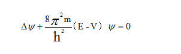

第八章 量子论 二 谁主沉浮
这张明信片的作者，是屈指可数的物理奇才——海森堡。泡利的师弟、朋友。
沃纳·卡尔·海森堡（Werner Karl Heisenberg），德国人，1901年12月5日生于维尔茨堡，老爸是慕尼黑大学拜占庭语言学教授，爷爷是马克西米廉斯中学的校长，海森堡的中学时光，就是在爷爷的治下度过的。普朗克也曾在这儿上过学。
老师们很快就对海森堡青眼有加，倒不仅因为校长是他爷爷，更多的是因为，这孩子智力上特别耀眼。“他能迅速抓住事物的本质”、“思维非常敏捷，而且一般不出错”……老师们的评价一点也不过分。海森堡12岁就玩微积分，并且开始啃希腊哲学著作。同时，他对物理、宗教、音乐、文学都有强烈兴趣。研究这么多东西，他还有大量精力无处挥霍。如果不是那个脑残皇帝以民族和国家利益的名义挑起一战，搞得大家饿肚子，小海的文化生活会更加丰富多彩。他参加了学校的准军事训练营，一种“童子军”式的组织，这样可以吃饱饭，还可以经常搞些户外活动什么的——大概就是这种经历，养成了他后来有些偏执的爱国主义。
一战终于结束了，本来已经被战争拖垮的德国经济，又压上了战争赔款的大山，彻底崩溃了。爱国贼们终于把国家搞得一片混乱。好在学术界还算比较宁静，这是社会最后的希望。小海不仅幸存下来了，还把学业修炼得光彩夺目。
1920年，历史悠久的慕尼黑大学。在数学教授林得曼 (Ferdinand von Lindemann)面前，海森堡展示了当一个数学家的远大理想。对物理学来说，万幸的是，林德曼拒绝了小海。原因是，教授问他最近看了哪些数学书，小海天真无邪地回答：“时间、空间和物质什么的”。林德曼马上告诉他，你走错门了。海森堡的第一个远大理想泡汤了。
于是，他去找老爸的朋友索末菲蜀黍，展示了当一个物理学家的远大理想。索老师只一眼，就让这颗好苗子进了他的苗圃，还特许18岁的小海参加高年级的科研讨论班。
在研讨班上，有个黑头发、脸上长着青春痘的家伙，很引人瞩目。索老师告诉小海，那小子就是传说中的泡利，他已经快20岁了，你可以从他身上学到很多东西。
小海是个乖孩子，再去研讨班，总是往泡利身边凑，还老向泡利请教问题。一来二去，俩人就熟了。要说这哥俩，在一起简直就是绝配，除了脑子好、性别男以外，其他毫无相似之处，一个安静、含蓄、友好，一个热烈、直爽、刻薄，一个似浪子奇葩，一个似美玉无瑕，若说有奇缘，今生他好像总在欺负他。这对宝，水和火一样的差别，居然很快就过起了懒虫师兄和勤快师弟的幸福生活。
由于作息时间几乎相反，他俩见面的时间倒也不多。但是，泡利依然严重影响着海森堡的生活、学习和思想。他开玩笑时，就骂小海一顿。他认真时，就狠骂小海一顿。但小海完全不在乎。就算小海名满天下后，泡利看他的理论不爽，也是照骂不误，而小海在讲台上聆听师兄的痛骂以后，依然淡定地继续演讲。物理界早都习惯了这个剧情，见怪不怪了。
小海见泡利在写百科全书的相对论部分，感觉这哥们太酷了，就嚷着要研究相对论。泡利免不了又骂他一顿，告诉他，相对论被老爱蜀黍一个人搞定了，只剩下些残羹剩饭，没啥搞头了，还是搞量子论有前途！不是每个人都有机会被泡利骂，也不是每个人都有机会得到泡利的建议。海森堡很听话地去研究量子论。
他俩在理论物理上顺风顺水的，吵吵闹闹过得很开心。但是，学物理，一般是逃不过实验课的。他们的实验课教授，是1920年新来的维恩。对，就是搞出位移定律的那个维恩。一个认真的实验教授。我们都知道，泡利和海森堡都是实验渣。渣就渣吧，你倒是找个好搭档啊，这两位还不知死，老凑在一块搞实验，结果就没有最烂、只有更烂。可想而知维恩对这两位的印象了。不过，他俩的实验也不是每次都以失败告终。有次，哥俩又一起去上实验课，内容是测音叉的振荡频率。做着做着实验，俩人又开始讨论一个问题，又有分歧（为什么老说又？），于是又放下实验，又开始激烈辩论。终于吵完，二人觉得很过瘾，却发现快下课了。实验没做完，时间又很紧迫——就剩几分钟，神仙也做不完了。这时，神都想不到，海森堡来了句：“泡利，你敲一下音叉俺听听。”泡利还真敲了。他敲了！海森堡的音乐天分首次得到了实验证明：他准确地听出了音高，并光速计算出了振荡频率！实验老师拿着他俩的计算结果直犯嘀咕：团结协作时老出错，吵架居然可以出正确结果？！
海森堡不仅不爱做实验，还特贪玩，下棋、弹琴、爬山滑雪露营等各种户外。索末菲忍无可忍，对这位资深驴友、文艺青年下了禁令，这些杂七杂八的爱好，太浪费他的天才和时间了！
小海的天赋让索老师信心爆棚，他开始给小海布置一些超级作业。比方说：反常塞曼效应。海森堡的任务是，建立一个公式，来描述那些光谱分裂。这个初生牛犊一猛劲，还真搞出一个理论。虽然后来被证明是错的，但成功地吸引了一些高手的眼球，比如玻尔。
1922年6月，哥廷根玻尔节。海森堡本来没奢望去听玻尔讲座，因为他没路费。一点也不慈祥但无比善良的索末菲再次爱心泛滥，出了这笔钱，于是小海屁颠屁颠地去了哥廷根。又可以欢乐地听师兄骂人了！下面这个自然段是玻尔的作文：
美丽的夏日，花园里飘来阵阵玫瑰的清香。大厅中座无虚席，一排排地坐满了著名的物理学家和数学家，人们都点头赞许着我的学养和智慧。突然，跳出一个毛头小伙，指出我的数学计算是错的！
这次，毛头小伙不是泡利，而是海森堡！老谋深算的玻尔很随便一句“课后再说”，当场敷衍过去。
就这样被无视了？小海很受伤。演讲结束了，小海收拾东西准备走人。突然，玻尔降临：“咱俩干嘛不出去散散步，顺便把那个问题彻底搞搞清楚呢？”其实，在课堂上，玻尔已经被这个男孩的洞察力着实震惊了一把。玻尔当时就盘算着，绝不放走这小子！这不，一下课，就来下套儿了。
玻尔请散步，小海当然应邀了。下午，一大一小俩爷们儿就在学校附近的小山上转呀转。
我比你所能想象的还要更赞同你。一开始，玻尔就立场坚定地站在海森堡这一边。
哦，原来咱俩是一伙的。海森堡放下心来。
谈心，是玻尔的独门神功。接下来，玻尔就开始袒露心扉，恳切地谈了自己工作的心路历程、对物理学现状的困惑和苦恼。正当小海感到玻尔太坦诚，自己无以为报时，玻尔说，我的，你都看见了，该你了。
于是，小海只恨自己的故事太少，遂竹筒倒豆子，一股脑全交代了。酣畅淋漓。
玻尔表示聊得很开心。他的确开心，因为目的差不多达到了。可以进入正题了。于是，他不经意地提出一个建议：你可以来哥本哈根访问一个学期。
小海受宠若惊，但他已经答应玻恩，下个学期要到哥廷根学习。
原来玻恩先下手了。玻尔不动声色，热心地介绍哥廷根的物理、数学大腕，以供小海参考。小海心里暖洋洋的。
分手时，小海欣喜地看到，前途一片光明。
我真正的科学职业生涯，是从那个下午开始的。小海如是说。
索老师要去美国，离开的这段时间，他很负责地把海森堡托付给了玻恩。
玻恩的眼力一点也不比索末菲差，他看出来了，海森堡可以媲美泡利！对于天才，玻恩是见一个爱一个。何况，小海又勤快，性格又那么好。这趟哥廷根没白来，小海不仅受到玻恩的教诲，还得到希尔伯特的点拨。超值啊！
玻恩邀请小海：来当我的助教吧。拿到博士以后。
如果你以为，反常塞曼效应是索老师给小海出的最难的一道题，那就太低估索老师对小海的期望了。他给小海出的博士论文题目更变态：湍流。说是为了拓宽小海的知识面。这个问题有多变态呢？老实说，直到现在也没完全解决。索老师当然知道它的难度系数，所以，他只要求：用基本方程推出特定情况下的结果，就OK了。饶是如此，海森堡还是发现，这个问题无比复杂，按部就班地去搞定，臣妾做不到啊！情急之下，敲叉听音的温馨一幕又浮现在眼前。于是，他看了一遍森林般的方程，眉头一皱，恶向胆边生——凭感觉猜出一个答案，交差。
对这个完全是蒙出来的答案，索老师居然表示理解：方程太复杂，近似解就可以了。论文过关。这就是大结局？No！20多年后，有人终于得出了那个解，海森堡蒙出来的不是近似解，而是完全正确的准确解！神呐！都出来膜拜上帝吧！
好吧，海森堡，你赢了，你是天才，你数学好，你猜都猜得对，你玩转理论没商量，可是，有实验在等着你。
维恩教授虽然没放水，但至少，他应该是没打算为难这个实验渣。你看看，他满脸严肃地问了些幼稚的问题：电池的工作原理是什么、某显微镜的分辨率多少……维恩老师，严肃点，我们这儿考博士生呢，你把初中题念出来是要闹哪样？
海森堡的答案让维恩教授本来就严肃的脸变得铁青，该混球净玩儿高端了，没注意这些技术细节，所以一概说不清。
差评！维恩教授给了小海应得的实验分。
好评！索老师给了小海畸高的论文分。
于是，小海得了个平均值：Ⅲ级分。比最差好一点，勉强拿到哲学博士。作为一名知名天才，跟博士里面的差生混在一起，这可怎么活！泡利师兄得的可是Ⅰ级分，全优！鬼知道他当初是怎么混过实验关的。也许，维恩教授是怕这家伙炸了他的实验室，或者，怕这家伙在课堂上突然跳出来给他挑刺？反正他是过了。
大家都知道，我是泡利那个档次的，现在搞成这样，同学们怎么看？师兄怎么看？今后在天才界怎么混？跑吧！
往哪跑呢？当然去投奔玻恩。小海从新晋博士庆祝会上溜了出来，连夜坐上开往哥廷根的火车。
他还记得，上次去见玻恩，就很糗。还是索老师去美国那回，正值假期，小海听说偶像爱因斯坦要去莱比锡讲座，就欢乐地去了。没想到，有个疯子前去捣乱，只因为老爱是个犹太人。小海很郁闷。但接下来的消息让他更郁闷：那个捣乱的疯子是个有名的实验物理学家——我不说你也知道那是勒纳德了。小海惊呆了：科学家怎么也会干出这种脑残勾当？！讲座没听成，还毁了三观。老天仍嫌小海不够倒霉，又派了个小偷，把小海的钱偷了个精光！没钱怎么去哥廷根？就这样回家，老爸会不会不高兴？于是，海森堡找了份伐木的工作，狠狠地户外了一个假期，赚了点钱……难怪玻恩看见他时，感觉他像木工坊的孩子。
上次给玻恩这种印象，这次，以Ⅲ级分得了个博士，不知道玻恩会怎么看。小海心里很没底。
玻恩跟小海本来是约好冬天见的，所以，当大热天的发现小海站在面前时，他吓了一跳。小海深吸一口气，红着脸坦白了考试的事，然后直奔主题：“不知道您还肯不肯要我？”
玻恩的表情早就从惊讶转为同情了。作为一个资深实验渣，玻恩惺惺相惜地收留了小海。
现在，物理学有太多事情需要去做了，天才紧缺！量子物理靠玻尔-索末菲模型苦苦支撑，但实验结果却总是不合时宜地宣布：再完美的补丁，也救不了一个破旧的系统！玻恩、泡利等都看到，这个系统的根基有问题，得推倒重来。谁能率先杀出一条血路呢？海森堡认为，是玻尔。
1923年底，小海给玻尔去信，谈了自己研究反常塞曼效应的情况。玻尔回信勾搭道：你可以来哥本哈根聊聊。
于是，小海兴冲冲地来到玻尔研究所。那一天是1924年的315。玻尔挖人的功夫很变态，短短两年，就把空荡荡的研究所搞得人满为患，不得不建了两座新楼，才实现居者有其屋的宏伟目标。
没新鲜几天，小海就抑郁了。本来，他以为一来就能和玻尔在一起搞研究，没想到，玻尔这家伙神出鬼没，基本见不到人影。这还罢了。更郁闷的是，他惊奇地发现，在这儿，他再也找不到那种鹤立鸡群的优越感了，因为，几乎每个年轻人都是那样的出类拔萃，在这种群体里，想崭露头角，和玻尔并肩作战，机会很渺茫啊！这帮家伙不光专业好，有各种特长，还都会好几门外语，而自己，只懂德语，聊起来挺别扭。另外，业余爱好也不一样，玩儿不到一起去。所以，还是老老实实宅在房间里比较好。
正宅得黯然销魂之际，玻尔飘了进来。他是来约小海出去溜达的。
这一溜达，就是三天。边聊边走了160多公里。两人从相识到相知，三天速成。咱俩知道，和玻尔聊，你就得敞开心扉，不然，他会敞得让你过意不去。小海这趟聊得很Happy，这小子已被玻尔的魅力打败。
天真烂漫的小海从来没想过，一直很忙的玻尔，为啥突然肯抽出三天时间，专门用来勾搭自己呢？玻尔会说，是因为收到一封信吗？信上说：“现在的物理学家可以分两类：一类是先用半量子数算一遍，如果不行，就改用整量子数；另一类是先用整量子数算一遍，如果不行，就改用半量子数——海森堡除外，因为他更有头脑。”一看这睥睨群雄的句型，我不说你也知道，信是泡利写的。
目光如炬、毒舌似刀的泡利夸过几个人？这厮把所有搞量子的物理学家都损了一顿，独独把小海刨了出去，甚至用“杰出的天才”来形容他——这究竟是何等人物？聪明的玻尔意识到，自己可能慢待了一个大神！于是，玻尔这才豁出去三天时间，专程陪海森堡溜达。事实证明，这实在是一个英明的决策，就算专门陪他溜达一年也值！如果没有海森堡，哥本哈根在量子论中的地位，就得重新掂量了。当然，这对海森堡，也是意义非凡。泡利知道，海森堡的知识与天资没的说，但是，总还欠那么一点点火候，需要一套坚实的哲学思想固本强基。而这个，玻尔可以给他。泡利又对了。玻尔和海森堡讨论的都是基础性、原理性、哲学性的问题。多年以后，小海深情地回忆道，那段日子，是上天的馈赠。他总结道：“跟索老师学到了乐观主义，在哥廷根学到了数学，从玻尔那儿学到了物理。”
跟玻尔混，当然不都是好事，一不留神，就会被涮。一日，小海童鞋欢乐地跟玻尔去散步。走上一座小桥，玻尔晃了晃一侧桥栏上的铁链。小海惊奇地发现，对面栏杆上的铁链也跟着晃了起来！看着小海很懵的样子，玻尔善良地提醒，这是共振现象，并让小海解释一下。共振是一种普通的物理现象，小海童鞋当然知道。于是，一本正经地发表了一番生动的共振演说。讲完，玻尔虽然一脸诡异的笑，但看上去很满意的样子。于是两人继续Happy地散步。
故事还在继续。另一位童鞋跟玻尔散步时，玻尔故伎重演。但这位童鞋认真研究了半天，仍然百思不得其解。怎么我晃就不共振？！于是，玻尔解密：栏杆上有根轴，转动之，可以带动对面的链条，刚才是自己在捣鬼。这位童鞋听了狂汗。玻尔安慰道：至少你没被玩得像小海那样惨，他到现在还不知道自己被玩儿了，哈！
唉，发表演说前，小海就懒得自己动手试一下。实验渣啊！
海森堡也不是每次被玩儿都毫无知觉。前面说过，到了哥本哈根，小海意识到，不会几门外语真的比较尴尬。于是开始学外语。在丹麦，首选当然是丹麦语。和泡利一样，他很快就学会了，随时准备施展一下。机会说来就来，玻尔让小海准备一次演讲。小海顺理成章地用丹麦语做了充分准备。开讲前半小时，玻尔飘过来对牛哄哄的小海曰：“很显然，我们应该讲英语。”小海当场凌乱了，英语俺还没学好啊！这位神仙只好在半个小时内用自己不熟悉的英语又准备了一遍。你当然知道，小海的这次演讲是有多糗。
玻恩不会这样玩儿小海，他越来越喜欢这小子。对小海的栽培，也是走传统路线。不过，小海在哥廷根比较纠结。他最早想学数学，被拒，便下决心学物理，但到了哥廷根发现，这里的物理学家似乎比数学家更爱数学。所以，数学成绩越来越好的小海，越来越想提高物理成绩，哥本哈根的吸引力也就越来越大。
1924年秋，小海获得了在德国大学任教的资格。那时，他已经发表了十几篇论文，物理界的一颗新星冉冉升起。玻恩要去美国开会，要等1925年的5月才回来。所以，小海出去疯玩了三个星期。9月份，又来到哥本哈根。
小海慢慢地融入了哥本哈根团队，和所有人相处得都很好，除了玛格丽特。玻尔夫人从第一眼起，就不喜欢小海，要知道，她对那个动不动就咆哮的泡利还很友好呢！女人的直觉有时候真的蛮厉害。
我们先把女人的直觉放到一边。因为玻尔研究所很忙。为了拯救玻尔-索末菲模型，消灭爱因斯坦的光量子，终结波粒大战，玻尔说服他的助手克拉默斯（Kramers）、斯莱特（Slater），隆重推出了以三者名字命名的“BKS理论”。
为什么是“说服”呢？因为这件事儿，真的是靠玻尔的三寸不烂之舌促成的！
这里有必要深度八卦一下玻尔的领袖力，因为这对量子论的发展影响很大。以后涉及到玻尔的时候，我们首先要考虑的，是他的超强影响力。玻尔智商高，情商更高，他对身边的人，有极强的吸引力和控制力，是天生的领袖。玻尔借这种神力，把众多天才聚拢到身边，为其效力。作为一个研究机构的中心人物，这种素质，当然是打着灯笼都难找的。
但是，由于他的口才和韧劲也同样强大，所以，你只要在他身边，就一定会被他说服。这就导致，玻尔身边的人，就只能跟着玻尔走——这句话翻译过来就是：玻尔的影响力会压倒性地消灭不同意见——当然，他不是故意的，因为他更需要正确的意见（稍后有证据）。在前面，通过卢老师与玻三篇的战斗，我们已经领教过玻尔的这种能力，这无疑会影响天才们的创造力，虽然玻尔非常善于诱发你去创造。听起来是不是特绕、特矛盾？事实就是如此纠结。
我们可以拿卢老师、玻尔二者的门下做个对比，玻尔聚集的天才，质量上应该是略高于卢老师的，至少不比卢老师手下的天才少，研究所的条件也不差，但是，获诺奖的人数，却跟卢老师没法比。我们稍稍留意一下，就会发现一件非常狗血的事实：海森堡、泡利、狄拉克这些大神最重要的贡献，都是玻尔不在身边时做出的！但是，又不可否认，这些贡献，离开了玻尔的影响，也不会如此集中地爆发。所以，现在看来，哥本哈根的成功秘诀是：要跟玻尔在一起充实自己，然后躲开他去创造。苍天呐！怎么会这么纠结？！
玻尔的超强影响力是一柄锋利的双刃剑。他的伟大之处在于，他虔诚地企盼得到真理，并千方百计地去追求她。这里有一个费曼的故事，比较典型。
1940年代初，那时，玻尔已名震江湖，而费曼刚刚出道，在洛斯阿拉莫斯国家实验室当小厮。这个实验室负责研制原子弹，而玻尔是曼哈顿计划的顾问。一天，玻尔带着他的儿子玻尔2.0来到实验室，讨论炸弹的事儿。即使对实验室的头头脑脑们来说，玻尔也是个神，每个人都想离玻尔近点。所以，在讨论会上，小厮费曼只能坐在角落里，从前排人的脑袋之间找个缝看到玻尔。
第二次会前，费曼接到一个电话，是玻尔2.0打来的，说是玻尔要约费曼聊天。费曼不敢相信：“找我？我是费曼，我只是个小厮……”
“没错，找的就是你。8点见行不？”
于是8点见。下面是他们的对话；
玻尔：“咋能让炸弹更给力呢？我的想法是……”
费曼：“不行。因为……”
玻尔：“那么，这样呢……”
费曼：“稍好点，但愚蠢之处在于……”
以上过程重复N次，玻尔的烟斗灭了又点，点了又灭。费曼这小子火力太猛，战斗很激烈。
最后玻尔边点烟斗边说：“现在可以把其他头头脑脑叫来讨论了。”
后来，玻尔2.0对费曼解密：上次开会，老爸就对他说，记住后排角落那小子，他是这里唯一不怕我的人，只有他才能指出我的想法是否疯了。所以下次，我们先不和那些只会说“是”的人讨论。把那个小家伙叫来，我们先跟他讨论。
看看，玻尔十分清楚自己的影响力，生怕这种影响力压制了正确意见，所以，他会想办法去诱导异见的充分表达。但是，当玻尔认为自己的想法正确时，他会毫无节制地施展无敌神功，锲而不舍地把身边所有人拉上自己的船——有时候是贼船——比如这个BKS理论。
我们知道，关于这个理论的目标，大致可以用一救一杀一调停来概括：拯救量子原子模型，消灭光量子，终结波粒大战。这个理论繁琐得要命，而且特别短命，所以就没必要细说了，主要想法有三：
1.原子之间有一种神秘的联系，叫做“虚辐射场”，它最牛逼的作用之一，就是可以引起量子跃迁。
2.毙掉光量子，重新考虑能量吸纳机制。
3.砍掉守恒定律。
这样一来，玻尔模型就可以抛弃讨厌的光量子了，光不是量子，也就不存在什么波粒大战了，劝架成功，世界一片和谐，除了一个小小的问题：久经考验的伟大战士、自然法则先驱守恒定律被牺牲。
这可不是小事，物理界认为，这不是革命，是谋杀，赤裸裸的谋杀！玻尔的两个小伙伴不怎么在乎光量子的死活，他们也知道，消灭光量子，最省事的办法，就是干掉守恒定律。但是，当玻尔真的要干掉守恒定律时，小伙伴们还是惊呆了，他们联合起来反对玻尔。但是你知道，玻尔的无敌神功是所向披靡的，斯莱特很快被说得哑口无言。克拉默斯坚持得久一点，但是代价也大，他刻骨铭心地享受了玻尔夜以继日的神聊，终于被聊倒，在病房里举手投降了。
有了同盟，玻尔开始各个击破，搞定身边的每一个人。怀疑派海森堡被玻尔成功洗脑，他不仅自己归顺BKS，还把玻恩拉下水。玻恩上了贼船，还喜滋滋地祝贺玻尔找到了“最终答案”。最终答案！这是被洗得有多彻底啊！拿下小海、玻恩，对玻尔来说，宛如平常一段歌。他最大的战绩是，搞定了反对派泡利。泡利一听到这个BKS理论，立即跳起来反对，但不幸的是，他那时去了趟哥本哈根，玻尔可以随时找他聊。经过N个昼夜，这位以思维犀利著称的物理学良心，终于被聊晕了，居然神使鬼差地归顺了BKS！小海、泡利这对神组合，在玻尔的指使下，尝试巩固这个形迹可疑的BKS理论，当然，他们不可能成功。
泡利毕竟是泡利。一离开哥本哈根，他的脑子就清醒了，立即向玻尔宣战：
我反对……。光量子本来就不招人待见，再加上玻尔的无敌神功，一时间，BKS兵团居然节节胜利，征服了越来越多的降军。可是，有一个人始终坚定不移地反对BKS理论，即使在他访问哥本哈根期间，玻尔施展无敌神功，也没能把他的意见撼动分毫，更别提洗脑了！咱俩知道，这位，是爱因斯坦。他说，这个理论太烂了，如果想拉一张反对意见清单，绝对能列满整整一大页纸。老爱宣称，如果BKS这种理论是正确的，他宁可去当修鞋匠，或者赌场伙计。
不管玩儿理论的闹得多欢，终审判决还得靠实验。BKS的判决来得挺快。KBS论文刚发表一个月左右，康普顿效应的进一步研究成果表明：反冲电子和散射光，总是同时出现，并且角度密切相关，这不是粒子相撞是什么？光不是量子是什么？BKS理论八成是错的！1924年4月，盖革（Hans Geiger）和博特（Walther Bothe 德国物理学家）通过实验证实，光子与电子相撞，能量和动量依然守恒。守恒定律又一次经受住了考验，坚挺不倒。所以BKS理论应声而亡。
玻尔不得不接受那个讨厌的光量子，他伤感地写道：“除了为我们的革命努力举行一场尽可能体面的葬礼外，已经没啥可干的了。”他向斯莱特表达了歉意，斯莱特当面表示不介意，但40多年后，玻尔已去世，斯莱特在一次访谈中，表达了强烈的不满：“我对玻尔先生不曾有过任何敬意，因为我在哥本哈根度过了一段可怕的日子。”实在是令人唏嘘呀！
BKS理论的葬礼不算体面，可也不算太糟。因为，它并不非一无是处。海森堡和克拉默斯联手，用BKS理论成功地处理了色散问题。这项研究，对于BKS理论是否成功，已经无关紧要了，要紧的是，它首次讨论了不依靠电子轨道如何解决问题。这算得上是通向新量子论的一块垫脚石吧。
BKS理论是旧量子论的最后一根救命稻草，它的倒掉，意味着玻尔量子论的根基被摧毁，粒军的崛起，让麦爷帝国自顾不暇，更无力支撑量子论，劝和波粒的努力宣告失败，波粒大战风云突变，一切都得从头再来，场面相当混乱。打架的还没停，劝架的被打倒，还扔下一大堆麻烦。泡利抓狂了：“我希望我是一个喜剧演员，并且从来没听说过物理是什么！”说实话，泡利当喜剧演员，比老爱当修鞋匠更靠谱，因为他是卓别林的铁杆粉丝。
更惨的是海森堡，因为他已经被玻尔搞成了BKS理论的信徒。现在，BKS理论就像一座冰雪大厦，被实验结果瞬间融化，所有凉水都浇到可怜的小海头上，让他一时明白一时晕菜，他十分清楚必须另找一条出路，但方向在哪儿？心里完全没底。
泡利也在痛并寻找着。他十分羡慕老爱用几个简单原理，一步一步演绎出新理论的手法。但是，当你去找时，就知道，这有多难。他和海森堡一直在交流这方面的看法。
玻尔对海森堡已经倾囊以授，剩下的，只是殷切期待：交给你了，小伙子，去吧，找到解决办法！
方法。我需要一个方法！
带着这个问题，海森堡在1925年4月底回到哥廷根。一场风暴在小海头脑中肆虐。我们已经试了无数办法，这些努力没有白费——效率奇高地得出同一个结论：此路不通！
问题出在哪？原子核、电子、椭圆轨道、电子跃迁、电子壳层、光量子……这些东西，素材具体，结构清晰，机制美丽，论点有趣，论证有力，多么美妙的篇章啊！但它解决不了一个实际问题：不管怎么搞，很快就会出现杀不死的BUG！
为什么？一定是有些东西靠不住！那么，谁是靠得住的？这是个问题。
原子核、电子、甚至光量子，是实验证实的东西，但它们的结构和运动，却是人类“猜”出来的。虽然不是胡猜，而是根据辐射观测，比照我们的经验世界，去揣摩、描绘出来的，但是，谁也没验证过：这个美丽温馨的图像到底靠不靠谱？
谁见过电子长啥样？谁见过电子像行星那样沿轨道绕转？我们为啥要给原子画出一个经典图像？泡利师兄早就对这事儿不满了，尤其是塞给电子一个“确定的轨道”！
对，问题就出在这儿，这些东西，很有可能是不靠谱的！
既然我们不能像爱因斯坦那样，找到靠谱的基本假设，那么，对那些不怎么靠谱的假设，为什么不直接搁置不用？让轨道见鬼去吧！让对应原理见鬼去吧……等等，这些都不用，我们手里还剩什么？还有什么是可以相信的？
是的，只有可以“看”到的东西，才是可以相信的！
这就好比考察宇宙干部，他的讲话、宗旨、语录、所属社团，都反复告诉你，他在为谁服务；而观测其豪宅档次、数量，及其治下的人群生态等，才可以确定他究竟在为谁服务。至于他打的旗号是红是黑，走的路是正是邪，这些不靠谱的东西统统可以忽略不计。
只讨论看得见的东西，以“可观测的量”为基础，去建立理论，这就是“实证论”。在BKS理论垮台荡起的烟尘中，哥本哈根悄然兴起了这股思潮。
但思潮，只是想，还没人做。海森堡作出了一个勇敢的决定：不管前面是地雷阵，还是万丈深渊，这第一步，由自己来走。
实际上，小海不走也不行了。因为他染上了严重的花粉热病。
有多严重呢？鼻塞、鼻涕、喷嚏、双目瘙痒、眼脸肿胀、畏光流泪、哮喘咳嗽……人要是倒霉啊，闻一下花香也能让帅哥变猪头！小海还不知道这是天将降大任于斯人也，所以快被折磨疯了。他向善良的玻恩请了两个星期假，想找个没有鲜花的地方躲一阵子。
6月7日，小海来到黑尔戈兰岛。这里没有花香、没有树高，只有一些无人知道的小草。而且，这里离大陆有50公里。
女房东只看了小海一眼，就认定这倒霉孩子刚刚被海扁了一顿，于是，爱心泛滥地保证会精心照料他。还叮嘱道：以后出去卖瓜躲着点城管。
远离了尘嚣，小海每天游游泳、散散步、读读诗，过起了悠闲而又文艺的生活。这时候思考物理，心静如水、渐臻澄澈。他挑挑拣拣，发现，按照实证论，手头上只剩两样东西是靠谱的：谱线的频率和强度。似乎又回到原点。这不是从夫琅和费开始，到基尔霍夫和本生年代就可以掌握的数据吗？闹得这么欢，一竿子打回石器时代了？
当然没那么惨！现在，我们掌握的谱线频率和强度数据更丰富、精度更高。更重要的是，现在我们知道：光谱线是电子跃迁吐出的能量。跃迁的能级差，决定了谱线的频率（能量大小），而不同能级之间的跃迁率，决定了谱线的强度（数量多少）。那么，有了频率和强度，我们就应该能倒推出电子的运动状态！
这也太激动人心了！小海摩拳擦掌，说干就干。
现在，电子这个“幽灵电梯”开动了！我们已经知道，它从一层开到另一层，是用跳的，不路过中间地带，所吐纳的能量，也是一份一份的，我们现在能记录的，就只是它吐纳的能量，至于层级这些东西，我们是看不见的，不能引入计算。
为了偷懒，我们把原子大厦设计得简洁一点，它一共只有5层：屌丝层、中产层、富裕层、富翁层、大富豪层。已知耗能：
屌丝—中产：2
中产—富裕：1
富裕—富翁：4
富豪——大富豪3
电子可以在任何楼层之间穿越。现在，我们要做的是，准确算出各种穿越吐纳的能量。最简单、最经典的办法是，画一把尺，以屌丝层为原点0，以邻层间的能耗为长度，依次累加，得数依次为各层的刻度。这样，想知道任何两层之间的能耗，用它们刻度数相减，就OK了。看图：
这里的量，都是观测结果，没有计算，相当靠谱；不管从哪层到哪层，不用算，找对应的观测结果，就OK了，相当直接。就像列车价目表，一目了然。
小海列的表，比上面这个表要复杂。而且不止一个表。比方说，跃迁率，也要弄个表。
前面说过，有了这些可观测的数据，就可以想办法倒推出电子的运动状态。比如动量p和位置q。怎么做呢？咱俩知道，电子的运转周期，与它发出的辐射频率，是密切相关的。所以，有了频率，就能求出周期。有了周期，就不愁速度。速度×质量，就是动量p了。有了这么丰富的素材，加上跃迁率，位置q也就不远了。大致就是这样。当然，实际情况要比这复杂得多得多。比如现在，小海就面临另一个问题：
他所列的每一张表，在方程里都只是一个因子，比方说刚才这张表，用x表示，另一张表，用y表示。现在，x非要乘以y，出事了。
如果x=3，y=7，就万事大吉了，不管三七二十一，它就等于21。
但是，现在咱俩面前有两颗因子，x是一张表，y也是一张表。每张表里都有N多数，这怎么乘？！总不能胡乱抓几个数，让它们随便互乘吧？又不是在抓地富反坏右。
海森堡分析了下，只有用一种非常奇葩的算法，才能解释得通：用x表的“列”中各数，去乘y表“行”中对应的数，简单点说就是“x列×y行”，或者反过来“y列×x行”。这样一来，路走通了，任督二脉打通了。但是，出现一个大问题：xy-yx不一定等于0！也就是说，xy不一定等于yx。
这还了得？不管你管不管三七二十一，你7×3-3×7都必须等于0啊！这叫乘法交换律，自从地球上有了乘法以来，一直是这样交换的，怎么可以不遵守？！
小海也知道这不得了。可是，他搞不懂这是为什么。小海只知道，他的新物理成功地解决了几乎所有问题。虽然算法很陌生，很麻烦，但是，它不需要任何补丁，也不用任何假设，就能再现已知的任何情形！
真的是这样吗？小海很没底，决定用守恒定律验证一下。于是，激动的心，颤抖的手，算来算去，还行，一高兴，就弄错了，算术错误，晕！再算！又是算术错误，汗……，又算……
凌晨3点，小海终于撂下笔，长舒一口气：各种守恒定律还健在。公式很强大。
春风得意马蹄疾，一日看尽长安花。现在天还没亮，小海也不敢看花。于是决定奖励自己看日出。他推开门，披星戴月，独自飘到黑尔戈兰岛南端。那儿有一块探出海面的巨石。这些天，他一直想爬上去，可惜没心情、没体力。现在，什么都有了。小海摸黑爬了上去，意气风发地坐等日出。
终于，无尽的海平面上，东方渐白，一轮红日喷薄而起。物理学的黎明到来了！
6月19日，又是星期五。海森堡把花粉热留在了黑尔戈兰岛，带着兴奋、激动和紧张，惴惴不安地回到大陆，他不知道自己找到的是宝藏还是垃圾，怎么办？
还能怎么办？找火眼金睛的师兄啊！让泡利鉴定下，反正天天被他骂，顶多再被他骂死一次，也比去外面丢人强！于是，小海的稿子到了泡利手里。
小海正顶着锅盖等挨骂，没想到被泡利狠狠地夸了一顿！
师兄不是被我的奇葩想法气糊涂了吧？他居然在夸我？！并且是“狠狠地夸奖”！这是自地球上有泡利以来就没发生过的事啊！爱因斯坦和玻尔都没享受过这待遇啊！小海受宠若惊地看着泡利，确信这是真的，然后欢天喜地、雄赳赳气昂昂地回到哥廷根。
小海含辛茹苦，忙乎了十来天，把自己的发现细细整理了一番，变成论文，寄给泡利一份，然后交给玻恩一份。泡利十分高兴，他在给同事写的信中道，这篇论文是新的希望，给生命带来了新的乐趣……如果是别人写的，很正常，但这种话出自泡利口中，就是肉麻的颂扬了！
玻恩在拿到这份论文之前，完全不知道小海在鼓捣些什么。当他有时间坐下来慢慢看这篇论文时，才领会小海为什么说这是“一篇疯狂的论文”。
玻恩很快就沉浸在小海的奇思妙想里了，那一簇繁茂的表格，那一袭诡异的乘法，越看，越觉似曾相识。说到这，咱俩是不是也觉眼熟了？
恭喜你，跟玻恩一起想起来了：这就是传说中的矩阵——Matrix！
在跟着爱因斯坦痛苦地补习数学，描绘广义相对论的弯曲时空时，我们接触到了让人吐血的“张量”，为了搞清楚什么叫“张量”，我们提到过“矢量”、“矩阵”等一些呆板枯燥的东西。大意就是：
相关的分量按照大小个儿排成一排，形成一个一维的数据表格，也就是一行有序的数组，叫“矢量”。我们画的那把尺，就相当于矢量。
若干行矢量排列成二维的数据表格，这个纵横排列的有序数组，就叫“矩阵”。小海列的那些个表，就是矩阵。
若干矩阵组成的三维数据表格，就是“张量”了。
老爱的广义相对论用到了张量。现在，小海用到了矩阵。
矩阵是19世纪的著名数学家、剑桥教授凯利提出的。作为一个数学概念，它不新，但鲜有人知。小海为了解决手头的问题，在毫不知情的状况下，竟然重新发明了矩阵！这数学天分，是有多强悍啊！这事儿传出去后，当初把小海关在数学门外的林得曼教授不知作何感想？
矩阵看起来很孤僻，但在适合的领域，相当好用。现在，咱俩就用工作生活常遇到的事，来列阵演习一下。
你是一个老板。什么？你更喜欢当会计？这个爱好真别致。好吧，你老板的公司有2个工厂，它们都生产2种产品：飞机、航母。不管是作为会计，还是作为老板，你都得会算它的产量、利润、库存什么的，是吧是的。
下面是上个月的产量报表x：
看看，乱套了不是
？得数完全不相等！驴唇不对马嘴。为什么呢？就是因为行、列颠倒了，相乘、相加的数字、项目都不是原配了，结局自然就很诡异了！
在量子世界，xy可以不等于yx，驴唇完全对得上马嘴，乘法交换完全合法！那么，这个公式在告诉我们什么？
我们又遇到了巴尔末、普朗克的尴尬，公式很强大，但是它在嘀咕些什么，我们听不懂！
但玻恩意识到了小海设计思想的意义，他把这篇论文投给了《物理期刊》。然后，继续陶醉在小海的设计方案里。
海森堡，这个年仅24岁的男孩，大笔如椽地勾勒了量子王国的建设纲领，实证论的设计思想，立意深远，基础牢靠，结构稳健，隐隐大师气象。玻恩认出了小海的核心算法——矩阵，就清楚地知道，怎样把它变成一个完整的理论框架。现在要做的，就是尽快修整完善，让量子论大厦拔地而起！至于它背后的深层寓意，以后再解读不迟。
玻恩知道自己很难独立完成这个浩大工程，必须找个同伙才行。他立即想到一个人：泡利。这小子物理和数学都很强悍，效率奇高，他来干这事儿，再合适不过了！
恰好，玻恩与泡利都去参加汉诺威的一个会，一见到泡利，玻恩就迅速邀请他联手，没想到，泡利同样迅速地拒绝了合作。拒绝就拒绝吧，他还来了句“我知道你喜欢沉闷和复杂的形式主义”。泡利一直对玻恩的数学控不爽，他担心玻恩的数学会“把海森堡的物理思想破坏掉”！
玻恩乘兴而来，却碰了一鼻子灰，在败兴而归的路上，把幸运女神顺手推给了一个22岁的男孩——约当。
帕斯库尔·约当(Ernst Pascual Jordan)，1902年生于德国汉诺威，1921年进入汉诺威理工高等学校学物理，后来发现这里的物理教学水平还不如自学，就改学数学。1922年到哥廷根学物理，后来投入玻恩门下，物理成绩、数学成绩双优。约当内向而腼腆，说话有点口吃，但这都不要紧，因为他有个讨人喜欢的特点：学过矩阵。
约当开心地拥抱了这个机会。把小海的方案用正宗的矩阵来写，顿时顺眼5倍。玻恩和约当很快发现了一个矩阵公式，把动量p和位置q撮合到一起。当然，你知道的，在这个公式里，p×q不等于q×p。玻恩和约当取得的一个突破性成果是，他们得到了pq-qp的值：
pq-qp=（h/2πi）I
这个公式后来被称为“海森堡非对易关系”。
简洁未减瑰丽，优雅又添神秘。
p旗飘移着动量，q旗昭示着位置。动静相宜，扑朔迷离。
面对面读你。背靠背品你。那一刻的你我，模糊了彼此，却，扰乱了平衡。
普朗克常数h，端然坐镇。从容而又坚硬。虚数i摇曳着朦胧的烛光，映射π值妙曼而圆润的身影。
天大地大。有物混成。独立不改。周行不殆。却是奇诡的单位矩阵——定海神针I在支撑！
这一切，都衍生于小海的大设计。一个崭新的力学——矩阵力学，在玻恩和约当的笔下奠基。量子基因活蹦乱跳地跃然其上，守恒定律等经典结论自然而然地囊括其中，一切都是那么美好。
玻恩和约当合著的“二人论文”叫《论量子力学》，9月底发表在《物理学杂志》上。海森堡在哥本哈根Happy期间，抽空学了矩阵。
10月中旬，小海回到哥廷根，与玻恩、约当组成三人团队，趁热打铁，构建了矩阵力学的主体，完美解决了让物理学家们吐血的原子光谱难题，并很快取得了一个辉煌战果：发现了氢的同素异形体。这篇“三人论文”也于11月底发表在《物理学杂志》上，名字叫《论量子力学Ⅱ》。你知道，海森堡发表的那篇发轫之作，当然就是“一人论文”了。
玻尔的“老三篇”，已经随着旧量子王国的衰落，成为刻满沧桑的遗迹，镀着夕阳的金光，诉说着昔日的辉煌。现在，玻恩幼儿园的“新三篇”在半年内骤然问世，取而代之。这是一场为物理学开办的数学盛宴，它标志着哥廷根在量子领域的崛起，百业待兴的量子王国，呈现哥本哈根、哥廷根、慕尼黑三足鼎立的盛况。
矩阵力学的兴起，让海森堡声名鹊起，当玻恩、约当建立的“pq-qp=（h/2πi）I”被称为“海森堡非对易关系”时，玻恩无语，小海不言。1933年，海森堡斩获1932年的诺贝尔物理学奖，但玻恩、约当却被晾在一边，这事儿摊在谁身上，都会不高兴。但玻恩到底是伟大导师，他风度十足地压住抑郁，给小海写了封贺信，小海这才良心发现，回信道：“当初是咱仨合作完成的工作，现在我却独占了诺奖，这让我感到羞愧。”实际上，即使没有建立矩阵力学，玻恩后来的几率诠释、小海后来的测不准原理，也都够获诺奖的了。不过，在矩阵力学的建立上，虽然小海的作用最大，但玻恩和约当的工作也至关重要，所以，小海独揽矩阵力学带来的诺奖，还是值得商榷的。
约当除了参与矩阵力学的建立以外，还在量子场论、量子电动力学等领域做出了贡献，也是强人一个。他曾被三次提名诺奖，都名落孙山。有人认为，这跟他当时太年轻，并且不善交流、不善表现有关，但是，狄拉克获奖，有力否定了这一说法。还有人认为，这跟他倾向于纳粹，并被指告密，从而声誉受损有关，这一说法有些道理，但是，当时的物理学家们了解约当，他在政治上有些幼稚和偏执，属书呆子型，并非人格败坏的阴谋者和投机者，他不支持极端种族主义的做法，还因此影响了政治前途，战后，泡利、海森堡都曾为其开脱，所以，这方面也并不能成为约当无缘诺奖的主因。就他所取得的成果而言，建立矩阵力学是最大、最有影响力的一个，约当在矩阵力学建立中做的工作不少，但是，科学贡献不是看工作量，而是看创造力。是小海开辟了矩阵力学这片疆土，泡利和玻恩发现了它的价值和意义，由玻恩的主导，在小海的设计思想基础上，完成了主体构建。在这个工程里，小海是总设计师，玻恩是设计兼项目经理，而约当是施工单位。在具体施工时，小海和玻恩也参与了添砖加瓦，盖楼时，他们一起克服了一些技术上的困难。其中，约当搬的砖也许最多。这就是约当在这个工程里的作用。这个楼盖成这样，没有小海，是不可能的。没有玻恩（甚至泡利），这个方案可能就作废了。但是，没有约当，换一个施工单位就行了，也能盖成这样，甚至更好——狄拉克证明了这一点。就约当所起的作用而言，他与其他二人一起因矩阵力学获诺奖，是没问题的，但是，如果这个诺奖没玻恩的份，那么，约当也应该没份——他的贡献不是非得诺奖不可的。要怪，也只能怪约当生不逢时，在那个巨星璀璨年代，物理贡献比他强、声望比他高的人随处可见，各种成果火山爆发般地涌现出来，以至于面对1920年代的大量成果，诺奖委员会难以取舍，纠结到蛋疼。综合这些因素来看，约当获奖，不过分；不获奖，也不十分冤枉。作为我们这些坐享其成的围观群众，只要记住，有个诺奖级别的牛人，叫做约当，也就可以了。
1953年，当玻恩终于因几率解释捧回迟到的诺奖时，他已经年过古稀了，爱因斯坦发来贺信，提到诺奖来迟了，玻恩回信道，当年被诺奖遗忘，一直深深地伤害着他。1970年初，玻恩去世，临终前，他吩咐把“pq-qp=（h/2πi）I”刻在墓碑上。唉！这些都是后话，不提。
现在，玻恩将面临他科学生涯中的“最大一个惊喜”。12月的一天，他打开一个邮件，里面是一份来自英国的论文，作者的名字叫保罗·阿德瑞恩·毛里斯·狄拉克（Paul Adrien Maurice Dirac）。
玻恩和约当挥汗如雨、大干快上时，小海正在Happy地爬山，他当时把论文甩给玻恩，拍拍屁股就出去疯了，现在已经乐不思蜀，他说，“过去的一个月，我一秒钟也没想过物理，我都搞不明白自己现在还懂不懂物理了！”玩儿得意犹未尽的脸上，隐隐透出“欠扁”二字。
这篇论文囊括了量子力学“新三篇”的所有内容，这不算牛，牛的是，这篇论文的完成时间，在哥廷根“三人论文”《论量子力学Ⅱ》之前。也就是说，在玻恩率领小海和约当群体作战时，这个叫狄拉克的家伙单枪匹马打赢了这场战争。更绝的是，同样的效果，但这小子用的数学简洁多了！让数学圣殿哥廷根的数学控玻恩为之倾倒，这会儿，如果让玻恩选一篇十全十美的论文，他会毫不犹豫地举起手里这篇！
狄拉克，这小子到底是何方神圣？！
小狄是剑桥男孩。哥本哈根、哥廷根、慕尼黑在量子王国闹得那么欢，怎么可以没有剑桥的份？所以，剑桥不出手则已，一出手，就亮出一柄神剑。小狄1902年8月8日出生于英国。完成这篇论文时，他才23岁，比小海还小1岁。
狄拉克的父亲是个教法语的瑞士人，母亲是英国人。狄拉克有一个哥哥和一个妹妹，按理说，如此完美的家庭结构，应该幸福得像花一样才对。但是，由于父亲的刻板和独裁，这个家很压抑。父亲规定，孩子们和他讲话只能用法语，因为这样容易学好法语，至于孩子们怎么想，从不在他的考虑之中。小狄不喜欢用法语表达自己，就选择沉默。如果仅仅是父亲太严厉，也就罢了，他的父母还相互憎恶，这让家里有种随时要崩塌的紧张和不安。后来，哥哥雷金纳德自杀，这让狄拉克更难接受父亲。尘世间最痛苦的事，不是生离死别，而是亲人活生生站在你面前，你却无法接受他！这种家庭环境，让小狄成为一个喜欢独处、沉默寡言的人，他羞于社交，尤其是对异性，达到了害怕接触的程度，这种性格，加上他卓越的天资，你想起了谁？是的，如果小狄不是个实验渣，大家一定以为这是可爱的卡文迪许同志再世。
狄拉克在12岁时，就被送到他父亲任职的职业技术学校，学习电气工程，毕业后可以从事电气工程师这份很有前途的职业，他的表现不是很突出，只是狂爱数学。这一点的确异于常人。中学毕业后，狄拉克获准在母校免费学习两年数学。沉醉在数学海洋中，两年很快就过去了。小狄想去剑桥接着学，但是，剑桥给的奖学金不够花。
因为奖学金里不包括路费，不会先寄给你。所以，狄拉克还需要5英镑才能到剑桥。这时，他的父亲拿出了这笔钱，狄拉克认为，这次是父亲帮了他。然而，直到他父亲1936年去世后，他才得知，就连那5英镑也不是父亲给的，而是当地一个教育机构赞助的！他父亲不是没有钱，去世时攒了7500英镑，相当于15年的年薪！冰冷的事实，残酷地掠去了小狄心中对父亲仅存的一丝温馨。
好在小狄可以在理论物理中体味安宁和快乐。这一切，造就了小狄独特的个性。
狄拉克极少与人交流，但只要是交流，不管是写还是说，遣词用句都极为谨慎，说出去的话，在他看来，就是最清晰准确的了。于是，在他演讲时，要是有人没听明白，提出疑问时，小狄的做法是：把之前说过的话复读一遍，分毫不差。这种授课法，颇具麦爷遗风啊！
小狄对语法的理解也很古板。一次，他演讲后，一位学生起立道：“狄教授，俺不明白黑板左上角那个公式是咋推导出来的。”狄拉克不理他，这位同学以为小狄没听清，就又复读了一遍刚才的话，狄拉克久久凝视之，一言不发。主持人实在看不下去了，就问狄拉克，干嘛不回答问题。狄拉克惊奇地回答道：“回答问题？他刚才说的是一个陈述句，不是一个疑问句！”
还有一次，一个法国物理学家来见狄拉克，他英语超烂，讲得很折磨。这时，狄拉克的妹妹飘过，用法语说了句话，狄拉克用流利的法语回应（父亲没白逼着他们学法语）。这个法国人顿时感觉被耍了，气愤地问狄拉克干嘛不说他懂法语。狄拉克满脸无辜地说：“你又没问过我。”
狄拉克说话简洁，也是名垂青史的。小狄的一个同事说，经过坚持不懈的努力，他终于学会了怎样和小狄交流：你简单、直接地提问，然后等着小狄回答“yes”或“no”就可以了。当然，他的回答都是对的。但是有人纠正道，小狄有时还会说“I don’t know。”喜欢神侃的费曼跑去跟狄拉克聊，结果费曼巴拉巴拉半天，狄拉克最后只回应了5个单词。费曼很郁闷，回去跟别人抱怨。结果人家安慰道，狄拉克肯跟你说5个单词之多，说明他对你聊的那些还是感兴趣的，否则你只能得到一个单词：yes或者no。
不过，狄拉克有时也会主动发表一些评论。一次，他跟玻尔去参观哥本哈根艺术博物馆。在一幅印象主义油画面前，小狄评曰：“这条船应该是没画完。”玻尔大寒。小狄似乎嫌玻尔不够冷，一会儿又评论另一幅：“这画不错，就其不准确度来看，是整体一致的。”
当然，你要是以为小狄不喜爱艺术，那就大错特错了。在绘画艺术方面，他喜欢连环画，还大爱米老鼠动画片。在文学艺术方面，他喜欢看侦探小说。在音乐方面，他是美女歌手雪儿（Cher）的粉丝。
狄拉克后来和海森堡开始了纯真的友谊，也擦出了不少火花。1929年，小狄和小海结伴赴美日游访讲学，到了夏威夷，由于这两位太年轻，主办方把他俩当成游学者，说是欢迎他俩来听讲，小狄简洁回应：“no。”
他俩乘船离开美国时，被记者缠上了。小狄很无奈，小海答应由他来搞定。记者找到小海，问道：“我跑遍了整艘船，也没找到狄拉克教授，你能帮我不？”小海诚恳地表示遗憾：我也不知道狄拉克在哪儿，但是如果你有什么问题，我乐意替他答。于是，记者就问了一堆关于狄拉克的问题，小海慷慨作答。在一旁东张西望、假装围观群众的狄拉克也听得很认真。
旅途很长。在船上，小海不停地跟美女跳舞，小狄每次都迷惑地在旁围观。后来小狄终于忍不住，好奇地问小海：“你干嘛老跟她们跳舞呢？”小海说，她们都不错，干嘛不跳呢？小狄研究了半天，不明就里，又问：“But，跳舞之前，你是怎么预知她们都不错的呢？”小海完败。
还是1925年。
这一年发生的事儿太多了：BKS理论垮台，泡利提出不相容原理，戴维逊和革末证实了电子的波动性，海森堡发现矩阵力学，哥廷根三人团完成了矩阵力学的主题构建，狄拉克提出q数，并与泡利先后将矩阵力学应用于氢原子……这是量子论凤凰涅槃之年。
事情还没完。脱胎换骨，可没脱衣上位那么容易。新生的量子巨人不仅独腿，还缺顶王冠。这两个问题不解决，他还没法登基。
还记得吧，泡利提出不相容原理时，留下一个问题：第4个量子数是什么？
我们来复习一下，已知的3个量子数：主量子数n、角量子数k、磁量子数m，分别代表电子轨道的大小、形状、方向。它们已经构成了一个丰满的3D原子。
为了防止电子一拥而上，挤到最低能级造成世界崩溃，泡利规定：原子里不允许存在量子数完全相同的两个电子。
但麻烦的是，这3个量子数不够用，必须有第4个量子数，才能实现这个蛮不讲理的规定。并且还有个条件：这第4个量子数必须具有两个值才行，多一个少一个都玩不转。那个神秘兮兮的“二值性”，究竟是个神马东西？！
这个纠结的问题，让喜欢啃硬骨头的好战分子们头疼不已，而又兴致勃勃。搞清这个量子数，值一个诺贝尔奖。最早，一个21岁的男孩有了一个异想天开的想法。
拉尔夫·克罗尼格（Ralph Kronig），德裔美国人，哥伦比亚大学哲学博士。当时，他正在哥本哈根访问。
一天，朗德（Alfred Lande）给克罗尼格看了一封泡利的来信。朗德是索末菲的学生，泡利的师兄。那时，泡利虽然还没提出不相容原理，但凭着过人的实力，已经大名鼎鼎。尤其是他对新理论准确而又犀利点评，常常成为经典。他的信，连玻尔都很珍惜，逢人就拿出来炫一下。何况是朗德！
泡利写这封信时，他正在鼓捣不相容原理。克罗尼格仔细读了这封信，注意到，泡利认为，原子需要第4个量子数。
克罗尼格的兴致立即被勾了起来。几经考虑，他突然蹦出电子绕轴自转的想法——就像行星那样，不仅绕太阳公转，还绕轴自转。他把这个想法告诉朗德，朗德感觉很新鲜，却拿不定主意，正好他知道，不久之后泡利会来哥本哈根，于是，这二位就兴奋地等着泡利出现。如果这个想法成立，诺奖差不多就到手了！所以，克罗尼格暗暗期待泡利的支持。
泡利终于出现了，但这次，他不是救星。电子绕轴自转的想法，遭到了泡利毫不留情的炮轰，对看不见的电子，他反对用经典图像来说事儿，另外，如果电子真是像一个微缩的行星那样绕轴旋转，那么，它既不符合麦爷的电磁论，也不符合爱因斯坦的相对论——表面速度会超过光速。实际上，玻尔、海森堡等也反对这个想法，但克罗尼格却没当真。现在，泡利的反对，让他彻底死了心，立即偃旗息鼓了。这时，是1925年初。
泡利的反对，影响的不仅是克罗尼格。所有知道这事儿的圈里人，都放弃了这个可能。但是，只要是圈子，就是有限的。何况，那时又没有微博。
世界就是这样，一个人的遗憾，往往会成为别人的幸运。
秋天很快就到了。又有两位毫不知情的同学想到了电子自旋：乌仑贝克（George Eugene Uhlenbeck）和古兹密特（Somuel Abraham Goudsmit）。他们是荷兰莱顿大学的学生，此时都是23岁，后来同是荷兰-美国物理学家。他俩的导师是我们的熟人埃伦费斯特。乌仑贝克擅长经典物理，而古兹密特是原子波谱方面的行家。埃老师有意安排他俩合作，好让这哥俩互相学习，取长补短。实践证明，效果相当不错。
研究谱线，自然就涉及到了泡利刚发现的不相容原理。乌仑贝克突然想到，要想搞到第4个量子数，电子必须是旋转的。并且，它必须只有两种转法才行：向“上”旋转、向“下”旋转。
乌仑贝克认为，电子在绕核公转的同时，还顺时针、或者逆时针绕轴自转。这样，就会产生一个小小的磁场，相当于一个小磁铁。由于自转方向不同，即使是前3个量子数都相同的电子，也会导致能级有一点点差别。就是这点小小的差别，导致了光谱线的分裂，也避免了两个相同的电子凑在一起聚众闹事，真正把泡利的蛮横规定落实到行动上，为维持原子世界和谐稳定的大好局面提供了强有力的保障。
多美的想法啊！乌仑贝克和古兹密特迫不及待地进行了数学证明：电子自旋的值有两个，恰好满足泡利要求的“二值性”！他俩赶紧写出一篇短小精悍的单页纸论文，拿给埃伦费斯特看。埃老师觉得这个想法不错，但拿不定主意。乌仑贝克和古兹密特又去问大神洛伦兹。时年72岁的洛老师兢兢业业地工作了一个多星期，算了厚厚一摞纸，得到一个噩耗：自旋的电子表面速度超过了光速N倍！
可怜的小哥俩光速通知告知埃老师，不要发表那篇论文。但为时已晚，论文早已寄出，追不上了。小哥俩痛心疾首：丢不起那人呐！
埃老师贴心安慰：“年轻人嘛，干点蠢事没关系。”
这篇不想发表的论文顺利发表了。嗅觉灵敏的物理学家们表示严重关注。玻尔当然也注意到这篇论文。别看BKS理论垮台了，但玻尔在量子论领域的威名依然霸气侧露，所以大家都想知道他是怎么看的。天知道，玻尔也想知道大家是怎么看的。所以，短时间内，没人能给出一个确切的答案，直到一个大熟人出现。
12月份，玻尔去莱顿大学参加一个活动，列车驶入汉堡时，他发现有两个人已经久等了：泡利、斯特恩。泡利看了那篇论文，猴急地想知道，玻尔是怎么看电子自旋的。玻尔给出了一个外教辞令：“非常有趣。”有趣你个头。泡利知道，玻尔觉得某个概念不靠谱，就会拿“有趣”来搪塞。
列车到达莱顿，玻尔又见到两个急不可耐的朋友：爱因斯坦、埃伦费斯特。他们也问了同一个问题：关于电子自旋，你怎么看？
玻尔解释了为什么感到“非常有趣”，因为根据计算，它会导致一些讨厌的累赘，比如，实验结果与计算有两个系数相矛盾，“双重线分裂中的额外系数”，它还有个大BUG，不符合相对论。埃伦费斯特赶忙告诉玻尔，这个BUG，已经被老爱用相对论干掉了。现在，电子自旋跟相对论是好基友。老爱解密了他的解决办法，玻尔恍然大悟，觉得老爱已经彻底把问题搞清楚了。大BUG被干掉，剩下的小股流寇，不成气候，很快就会被歼灭。玻尔的看法来了个180度的大转弯。
带着新思想，玻尔踏上归途。列车到达哥廷根站，两个男孩眼巴巴地在等着他：海森堡、约当。他们也十分好奇，玻尔对电子自旋这玩意是怎么看的。玻尔给了一个High评：这是个伟大的进步！
玻尔继续乘车前进，去柏林参加量子论诞辰25周年纪念活动。还记得吧？1900年12月14日，普朗克在德国物理学会上报告了他关于“正常光谱能量分布”方面的新发现，E=hv第一次面世，量子论宣告诞生。到了柏林站，玻尔下车时，有一种下错了站的感觉，因为泡利昨日重现般地站在眼前。这家伙专程从汉堡赶来，就为检验玻尔的革命意志是否坚定，他失望地发现，“自旋黑”玻尔去了趟莱顿，果断叛变了，现在是“自旋粉”。因为玻尔的临阵易帜，泡利气鼓鼓地给电子自旋扣上一顶帽子：哥本哈根新邪说。
电子自旋被认可后，克罗尼格悔恨交加，当初的众多反对者，他一个都没记住，除了泡利。从此，他对泡利颇有微词。
这是泡利仅有的两个错误之一（另一个是反对宇称不守恒）。是的，克罗尼格够倒霉，遇上了顶尖高手“百密一疏”中的那个“一”。即使如此，也不该对别人心生怨尤。你如果不能坚持正确的理论，那只能说明你功力不够。老爱的光量子，被全球物理学家反对了N年，但他依然坚信自己的理论是对的，这绝非固执，而是他功力深厚，看到了其他人看不到的地方。
克罗尼格的惨痛教训告诉我们，即使得到权威的否定，也不要垂头丧气，哪怕这个权威是泡利。当然，还是那句话，这需要自身的功力达到一定高度才行。毫无实力地藐视权威、固执己见，是一种低级的无知。
后来，大BUG之外的小股流寇被围歼。英国物理学家莱维林·托马斯（Llewllyn Thomas）证明，那个两个系数的矛盾，是计算误差导致的。1926年，海森堡和约当用矩阵力学成功地处理了电子自旋。
这时，泡利还孤独地站在反对的一方。看着越来越像行星系统的原子，他气不打一处来，总是觉得哪儿有点怪怪的，横竖不顺眼，但一时又不确定。这种感觉，就像醋坛子老婆闻到老公衣服上若有若无的女士香水味，逮也逮不到，说也说不清，抓狂啊！
终于有一天，泡利用矩阵力学解开了这个谜底：电子的所谓自旋，并不像行星的自转。在经典世界里，我们转动任何东西，都是转一圈回到原状，比如，你和TA跳贴面舞，跳着跳着，TA转一圈，你们还贴面。如果TA也像电子那样，可就惨了：TA转一圈，你贴的就说不定是哪儿了，必须转足两周才能回到“贴面”状态。转两周回到原状的性质，叫做“1/2量子数”。这和经典世界的“旋转”是完全不同的两个概念，所以，我们不能把电子自旋简单地理解为“微粒在旋转”。从这个角度讲，泡利反对他们所说的自旋，还真没错。
其实，不止是电子自旋，所有粒子都有自旋。自旋，是粒子的4个基本属性之一，另外3个基本属性都大名鼎鼎、如雷贯耳：质量、能量、磁矩，你有我有全都有，一个都不能少。猜猜看，这4个基本属性，哪个最重要？
自旋最重要。
为什么呢？举个例子，就明白了。人类也有4个基本属性：智力、体质、人种、性别。哪个最重要？
当然是性别。它把人分成两类：男人、女人。
有了男人和女人，人类的其他一切才有可能。
自旋也是这样，它把粒子分为两类：费米子、玻色子。
所谓费米子，就是指自旋为半整数（1/2、3/2、5/2……等）的粒子。这种粒子在宇宙中有个重要的任务：构成实物。也就是说，所有实物都是费米子构成的，厉害吧？中子、质子、电子、中微子……等等，都是费米子。
费米子遵循泡利不相容原理，它们不能同时以同一个状态出现在同一个位置。就像大奶和二奶，同时出现在你面前，还撞衫了，仔细一看连戒指都撞了，你的世界也就毁了。后来发现，费米子之所以不相容，正是由于它们的自旋数是半整数，搞不到一起去。所以，如果你既要有二奶，又要世界和平，那么，想办法让她俩的自旋数都是半整数，她俩就永远不可能出现在同一位置，你就鱼和熊掌通吃了。
所谓玻色子，就是指自旋为0或者整数（0、1、2……等）的粒子。这种粒子的任务是：传递作用力。也就是说，费米子们全靠它才千变万化，宇宙也是靠它才生命不息、运动不止。光子、介子、胶子……等等，都是玻色子。玻色子不遵守泡利不相容原理。
那么，旋来旋去，是怎么个旋法、那些个自旋数又代表什么呢？
咱俩先用一个老办法，类比一下，观察一下，看看能不能总结出一个简单的办法，去认识一下这个新朋友：自旋。温馨提示：下面的图像，只是比喻。比喻哟！
电影《大内密探零零发》里，有一种无相神功——跟《天龙八部》里面的无相功不搭边，我们略去功法，只看“头部形态”。电影里的无相神功练成后，没有五官面目，却可以变出任何面孔。注意，我们下面所说的图像，都是“无相神功之头”，简称“相头”。OK，我们现在结合波粒二象性，来试着理解下自旋。提示：粒子有波的性质，波有频率，也就是周期性的变化。
自旋为0的粒子，相头是一个质点，从任何方向看，它都一样。于是，不管它怎么“转”，它都是一样的。转不转都一个样，怎么努力都白费，所以记为0。
自旋为1的粒子，相头是一个正常的脑袋，换个方向，你看到的就有变化。转动它，想让它和原来一样（恢复原状），必须转满1圈才行。也就是说，你转1圈，就能看见1次“原状”，所以记为1。
自旋为2的粒子，相头是“两面人”的脑袋，两张脸毫无分别，你转半圈，就能看见1次原状。那么，你转满1圈，就可以看见2次原状，所以记为2。
以上是整数。那么，半整数的自旋又是什么样呢？这个比较复杂。我们以电子为例，它的自旋为1/2。
这个相头是变化的，它一会是“正常脑袋”，一会是“质点”，循环变化，相当有规律：电子每转两圈，它就变化一个周期。
这样一来，如果你第一眼看到的是一张脸，那么，你想再看到这张脸，必须等相头转两周。同样，如果你第一眼看到的是后脑勺，那么，你想再看它一眼，也须转满2周才行。转2圈可以看见1次原状，记为1/2。
这下，咱俩好像有点明白了：自旋数=看见原状次数/转动圈数。
强调一下，上述所谓“相头”，是为了给咱俩提供一个可供想象的图像。实际上，自旋是没法用经典图像来描述的。因为经典世界里，不存在又是波又是粒的怪物。不过，等玻色-爱因斯坦凝聚实现大“体积”凝聚的“实体”后，或许咱俩能见到这种“怪物”。扯远了。这个以后再说。回到自旋。我们从波粒二象性出发，用粒子的“转动”，结合波动的周期“变化”，可以帮助理解。顺便复习下：
如果转动1圈，没有变化，或者见到“原状”的次数是1次、2次、3次……这些整数次，那么，这个粒子就是玻色子。
否则，它就是费米子。
没有费米子，这个世界就没有实物。而没有玻色子，那么，所有的费米子之间就没有任何关系，还是虚无缥缈。而这两个最重要的性质，都源于低调隐秘的“自旋”。
泡利虽然反对过自旋，但是，自旋跟他还真是相当有缘。
首先，我们知道，自旋的概念，是由于泡利不相容原理需要第4个量子数而提出的。反过来，不相容的根源，正是源于“自旋”。
在挺旋派的围剿下，1926年，电子自旋大大小小的所有BUG全军覆没，海森堡不仅和约当用矩阵力学成功地处理了自旋，还指出了搞定氦原子的道路，氦原子有两个电子！搞定带有两个电子的原子，是旧量子论梦寐以求、求之不得、辗转反侧的目标啊！胜利来得这么快吗？泡利举手投降。
1927年，泡利用二分量波函数和泡利矩阵，把自旋纳入非相对论量子力学的描述。
1928年，狄拉克在数学上解释了电子为啥会有1/2自旋，也就是为啥它非得转两圈才能恢复原状。
1940年，泡利又证明，量子场论必须引入自旋。自旋是所有粒子的内禀性质、基本参量，只因参量取值不同，导致性质各不相同。
自旋的基本参量地位坐实后，泡利十分后悔当初炮轰自旋，对克罗尼格负疚不已。多年以后，他提起这事儿，还在自责：“我年轻时真蠢啊！”
1927年，时年28岁的泡利受苏黎世联邦工学院之邀，赴任理论物理学教授职位，他迅速做了一件事：邀请克罗尼格做他的助理。并嘱咐道：“以后不管我说什么，你都要用翔实的论据反驳我。”
由于泡利-克罗尼格事件，电子自旋的诺奖陷入两难：给克罗尼格吧，他没发表；给乌仑贝克和古兹密特吧，又众所周知是克罗尼格首先提出的。诺奖最终没法落脚，干脆绕开了自旋，留给克罗尼格、乌仑贝克和古兹密特三人幽婉绵长的遗憾。当然，这更是泡利心中深切悠远的遗憾。
也许，我们的世界，正因曲折而异彩纷呈，亦因缺憾而意味深长吧。
他谦虚而文雅，却热情而固执；他远离名利场，却在多个学术领域夺人眼球；他博学多才，却大器晚成；他在政治上极其幼稚，却在经济上城府颇深，政治经济学在他身上完全分裂；他不懈追求纯洁崇高的爱情，却把浪漫搞成了浪荡、多情搞成了滥情；他自认少有原创，却善于借种生花，做出独一无二的创建……此公便是本节的男主角，风度与智慧并重，情圣与学霸的化身，影响社会风气，风靡少妇少女，刺激文化市场，冲突与矛盾的统一体——薛定谔同志。
埃尔文·鲁道夫·约瑟夫·亚历山大·薛定谔（Erwin Rudolf Josef Alexander Schrodinger），1887年8月12日生于奥地利首都维也纳。他父亲的理想本来是要当一个科学家，但为了生活，不得不继承了家族的油毡厂，生意相当火爆。
薛定谔的童年是快活的。他一边享受着优裕的梦幻生活，一边沐浴着父亲润物无声的诱导，一个天才就这样低调而茁壮地成长起来。
小薛爱好相当广泛，物理、数学、生物学、哲学、文学、诗歌、各种语言、体育运动、雕塑……这么多的爱好，却没落下博而不精的毛病，实属不易。后来，他在物理各个领域，以及物理以外的生物学、生理学、气象学、哲学等多个领域产生过重要的影响。
小薛在学校也比较会耍酷。同学们都没见过他怎么学习，但学校教的知识，却没他不会的。如果你只简单地认定他“功夫在课外”，在家偷着学，那也有些冤枉他了，因为他在课堂上绝不会放过老师讲的每一个关键点，在家学不假，但人家小薛学的可是课外书。既会听，又会学，高效低耗。所以，除了课程，他还有大把时间来学习各种语言，什么德语、英语、法语、西班牙语、甚至古希腊语等等，他都搞得熟如母语。另外，他还有大把的精力去搞艺术鉴赏、雕塑创作、户外运动什么的。
1906年，在同学们眼里总是在玩儿的小薛，以让人羡慕嫉妒恨的成绩考入了维也纳大学。
这当然是一所世界名校。咱们的老熟人多普勒、马赫、玻尔兹曼，以及本书没提到的爱丁豪森、斯忒藩、哈泽内尔、埃克斯纳等，都是出自本校。
薛定谔入学时，满校悲伤。因为玻尔兹曼教授刚刚自杀。
玻老师走了，但他的思想留了下来，继续改变着世界，也改变着薛定谔。小薛把自己汲取玻尔兹曼的思想称为“科学上的初恋”，“没有别的东西如此让我狂喜”。
学习玻尔兹曼思想，竟然是恋爱般的感受！这是一个真正的学霸。
所以，整个大学生活，小薛如鱼得水。
所以，他的博士论文选题，直接命中本校第二物理研究所攻而未克的一道难题：潮湿空气中绝缘体的导电性。
他顺利过关。用一个简单的思路：在潮湿空气中，很难有静电。从这个众所周知的现象出发，他用橡胶、玻璃、琥珀、硫磺、石蜡等材料，制成绝缘棒，一头包上锡纸、通电，另一头接上验电器，调整空气湿度，电流通过绝缘棒表面。这样，就能记录、推导电阻与湿度的函数关系。猜猜看，上面这些材料，在潮湿的空气中，绝缘性最好和最差的各是哪个呢？
小薛给出的答案是：玻璃最差，石蜡最好。（难道，相同湿度下，玻璃表面更容易形成导电膜？）
1910年5月，薛同学变成了薛博士。戴上博士帽后，他逮啥研究啥，涉及物理学的多个领域，并且，他还爱上了一个女孩。4年间，他发表了10篇论文，1914年1月，喜获大学教师资格。但他忧郁地发现，以大学教师的薪水，养家很成问题，何况，过惯了高富帅生活的自己，理应给心爱的姑娘一个安逸的生活。
于是，小薛问老爹：我是不是也该继承家族生意？
深藏科学梦的老薛果断阻止：你不该干这个。你要留在大学，继续搞学术。
一年后，薛老爹去世。他的价值观，让世上少了个老板，多了个伟大的科学家。
那个差点让小薛放弃科学的女孩渐行渐远，终于不见。而小薛，我们不用替他担心，因为，他的感情生活，对“空白”二字是零容忍。他很快就爱上了新的女孩——同样情炽如火、心赤如裸。
这位差点成为老板的未来科学家当上了一名军官。因为第一次世界大战爆发了。26岁的薛定谔作为一名炮兵指挥官，来到意大利前线。和多数有作为的科学家一样，他不喜欢军旅生活。况且，他敬爱的大学导师哈泽内尔在一次冲锋中阵亡。这让他更加厌恶战争和军营。
幸好，小薛可以收到一些书和科学期刊，能够追踪物理学的最新发展，把握科学的脉搏。对他来说，这才是生活。
可是，生活并不容易。战争终于熬过去了，但薛氏企业终于没熬过战争。一场仗下来，资产阶级被打成了无产阶级。全家经常要到赈济所去吃饭。
饿着肚子搞学问的滋味，不好受。但总比饿着肚子无所事事，老想着肚子饿强。战争后期和战后，薛定谔一直在关注相对论、量子论、气象学、涨落理论等领域的发展。同时，还对哲学情有独钟。他已经准备好了，只是一时不知从何下手。
本来，小薛是想献身哲学的，物理学作为爱好。但是造化弄人，战争打乱了一切，哲学的饭碗随着帝国的瓦解，被打得粉碎，于是，世上少了个爱好物理的哲学家，多了个哲学味十足的物理学家。
1920年，薛定谔移居德国，在耶拿大学任讲师。有了可以养家的收入，他立即迎娶了安妮玛丽·贝特尔小姐。这大概是他爱上的有据可查的第5个女孩。
小薛恋爱和搞学问的效率都不低，在业界，他的声望持续上升，一如他对爱情的热忱。
为了让生活更好些，薛定谔先后折腾到斯图加特理工学院、布雷斯劳大学任教授。由于薪酬原因，他又折腾到瑞士苏黎世大学任教。可是刚到瑞士不久，他就染上了支气管炎，不得不离岗休养，在阿尔卑斯山上的阿罗萨疗养院，一住就是9个月。
不过，疗养归疗养，学问归学问，薛定谔发表论文的速度与激情丝毫不减，一如他对爱情的追求。
时间飞速流逝。薛定谔成了著名物理学家。但是，他始终迈不过那道坎，成为一流的物理学家。
但他已经成为一流的情人。婚后，薛定谔依然不懈追求炽烈的爱情，不断爱上不同的女人。如果说他像个花花公子，到处拈花惹草，又有点冤枉他了。因为他每次付出的都是真爱，掏心掏肺的那种，有他创作的大量情诗为证；如果说，这是真正的爱情，又有点亵渎爱情的意思。因为他的女朋友数量实在是有点多，以至于怎么看也不像是爱情。
薛定谔与妻子安妮玛丽没有儿女，但他却有N个私生子。他与情人们相处得非常和谐，每个情人都对他死心塌地的。她们中，有演员、办公室职员、学生、同事的妻子等等，相当丰富多彩。他对别人的老婆一见钟情，就请那位先生来当他的助手，好方便自己和她在一起。后来，这个女人给薛家生了个女儿。如果说，这对薛定谔还算正常的话，那么，身为发妻的安妮玛丽却心甘情愿地照顾这个婴儿，就让人看不懂了，并且，妻子、情人、私生女与薛定谔公开生活在一起，真是有点骇人听闻了。
更乱的是，安妮玛丽也没闲着，她和薛定谔的好朋友赫尔曼·威尔（Hermann Weyl）搞到了一起，而威尔的老婆也和别人爱得不亦乐乎……苍天呐！生活，真的是一团麻啊！真的是没有最乱、只有更乱啊！放在一般人身上，世界早就毁灭N次了。
但薛定谔显然非同一般？虽然直到花甲之年，他仍然乱花丛中过、是叶就沾身，但与安妮玛丽却做到了白头偕老，共享了41年的喜怒哀乐，走到人生的尽头。真是一言难尽呐！这些都是后话，不提。
薛定谔最近有点烦有点烦有点烦。因为他正在和安妮玛丽闹矛盾。两个人一起劈腿，不闹点矛盾，就显得太不正常了。
不过这次闹得有些认真，他们很正式地谈到了离婚。但算了算，费用太贵，离不起。再说，宗教也不允许。安妮玛丽信天主教的。
还有一件事更烦。薛定谔突然发现，自己已经37岁了。当年意气风发的正太小薛，不知什么时候变成了成熟古怪的大叔老薛。根据经验，在物理界，到了这把年纪，要么功成名就，要么退隐江湖。而自己，少年得志，坐拥博学才子的美名，却悬在二者之间，既非winner，又非loser，进而无门，退而不忍，像一个奔五的科长，很尴尬。
老薛大叔不是没啥成绩，他已经发表了近50篇论文，涉及相对论、统计物理、原子物理、放射性、色原学说等方方面面的领域，范围广、跨度大，这还没算什么哲学、文学、生理学等方面的东西，够渊博，够坚实，但不够靓丽，不够气派。出产顶级品牌，谈何容易！
1925年的夏天真的很难熬。但秋天终于还是来了。
10月份，薛定谔读到一篇论文，作者是爱因斯坦。老爱的论文，当然要细读。于是，老薛大叔读到了注脚——读书不仔细的童鞋们请注意，已经不是第一次提到注脚了。
有一处注脚说，文中有一部分内容来自徳布罗意的波粒二象性论文。看得出来，老爱对这小子的看法赞赏有加。
薛定谔风风火火搞到这篇论文，读来读去，想来想去，当他终于想明白了的时候，立即被这位王子的奇思妙想所征服。
11月份，苏黎世大学和联邦工学院每两周一次的物理学例会如期召开。主持人是联邦工学院的教授德拜（Pieter Debye），他让老薛聊一下徳布罗意的论文。
老薛刚刚闯进徳布罗意的波粒二象世界，新鲜劲儿还没过去呢，于是，兴奋地广而告之。正当大家听得如坠云雾之时，德拜嗤之以鼻，兜头就是一盆凉水：这玩意儿不仅没有实验证实，甚至连一个基本方程都没有，这算哪门子理论？！
此言一出，万籁俱寂。
徳布罗意当时只是想写一篇博士论文，过关后就扔到一边去了，从没想过要弄个啥劳什子方程。老爱虽然喜欢徳布罗意的创意，但也没想过要给它配一款方程。现在，德拜揪出了这条大尾巴，真是一语点醒梦中人！
老薛大叔讲的就是一个速度，他马上热情高涨，说干就干，很快，他就搞到一个方程，立即拿来试用：看看它能否描述“带有三维驻波的氢原子模型”。但是，失败来得更快，方程给出的答案与实验不符。为什么呢？因为那时，电子自旋的论文刚刚发表，老薛还没看到。就算看到，也得搞清楚了才行。所以，这次失败，败就败在动作太快。看来，成大事，光有实力、有抓手、有机会还不够，还得讲求时机：早了干不成，晚了被抢光。难怪晚生几年的朗道面对已经崛起的量子力学，酸溜溜地说：漂亮姑娘都被别人抢光了！
爱情事业两不利，老薛很抑郁：方程不给力，老婆正怄气。怎么破？三十六计，走为上计！
恰好，圣诞节假期快到了。老薛是个很讲原则的人，婚姻是婚姻，爱情是爱情，工作是工作，休假是休假。假期来了，神也无法阻止老薛去休。不仅如此，他还忠贞不渝地挚爱一个地方：阿尔卑斯山的阿罗萨。要去，就一定要住黑薇谷别墅！
这也不怪老薛死心眼，去了你就知道，这地方真的很适合休假。尤其是，还有美人在侧。
前两年，老薛都是带着老婆去的。现在，两人正在战争中，如果连休个假也要带去继续战斗，那真是2B中的战斗机了！
我们不必担心老薛的假期空虚寂寞冷，因为他立即想到了一个绝佳旅伴，他的一位神秘情人。说她神秘，是因为老薛把那段日子的日记弄丢了。竟然没被人捡去发到网上，让反贪局假装追查一番，真是地球人的损失——现在史学家掘地三尺，也找不到有关那位神秘女郎身份的半点信息，只知道老薛爱得很疯狂。
接下来的两个星期。雪山、森林、别墅、圣诞节、美人……如果这不是一场偷情，那真是一场美丽纯洁的童话了。
不管怎么样，老薛和他的女神很快活。每一夜、每一天，美人都在鼓励他：薛葛革，加油加油加油，一定要加油哦。于是薛葛革就加油干。当然，有时也写写方程。
这位美人在该热烈时热烈，在该娴静时娴静，让老薛如沐春风，焕发了二次青春，带来旺盛的激情和喷涌的灵感。简直就是缪斯女神降世！
我们让女神作为红袖添香的背景，先去看看，小宇宙大爆发的老薛都干了些什么吧。在接下来的6个月里，他连续发表了6篇论文，囊括了量子理论、哈密顿光学+力学、原子模型、光谱学等多个物理领域，集新老量子论成果之大成，建立起形式完整、逻辑自洽、应用广泛的波动力学体系。
薛定谔立足徳布罗意波的概念，把电子看成环形波，能级与波节联系起来，经典物理的利器哈密顿-雅克比方程、变分法、徳布罗意公式在老薛笔下水乳交融。量子在这一刻灵魂附体，波动精灵腾空而起。史上最伟大的公式之一，薛定谔波动方程横空出世：

这就是名震物理江湖，在原子物理学中应用最广、影响最大的公式。老薛因此获得1933年的诺奖。先别忙着陶醉，这个公式虽然比海森堡的矩阵看着顺眼许多，但总感觉有点怪怪的。
Δ是什么？好像在哪儿见过。对！它是拉普拉斯算符。在麦爷的方程组里出现过，就是微分形式那组。是的，它是微分运算符，经典中的经典！
那个大V是势能，被体制内总能量E减掉，因为它不是正能量。这两位，大家都不陌生。至于h、π、m什么的，大家也都很熟。
这些，我们都不必太关心。
现在，有个关键问题：那个渔叉一样的ψ是个什么东西？
ψ，发音“普赛”。 第二十三个希腊字母。
薛定谔说，那是我的波函数，波的空间分布函数。
可是，它什么意思？通俗点说：它的物理意义是什么？
谈到这个问题，我们不得不遭点儿罪，动用一下脑细胞，重新审视一下这个方程，顺便追溯一些干巴巴的东西。让我们深吸一口气……准备好了吗？
这个方程，涉及到光学、力学的研究。而早在上个世纪，英国数学家、物理学家威廉·哈密顿（William Rowan Hamilton）就做过这方面的研究——把牛顿力学和光学进行类比。结果，有了一个绝妙的新发现：在零波长极限，光波轨道趋向于明确的路径。
而这个路径，服从“最小作用量原理”。啥叫“最小作用量原理”呢？通俗地说：任何作用、任何行为，自然界总是采用最简单的方法。所谓高效低耗、绿色环保，就是顺应自然规律而已。还记得费马同志提出的“光走最短路径”吧？这就是最小作用原理的早期表述，也是一个代表性的表述。
波的传播趋向于明确的运动，这句话的通俗说法是：波的运动原来是抽象派艺术，也许波大师自己也不太明确自己要说什么，现在好了，改成了产品示意图，清晰多了。这就提供了一个可能：波可以用方程来描述。哈密顿没搞出波动方程，但他在“拉格朗日力学”的基础上，用微分法，演化出“哈密顿力学方程”。
后来，普鲁士大数学家卡尔·雅可比（Carl Gustav Jacob Jacobi)对这个方程进行了改良，成为偏微分方程：“哈密顿-雅可比方程”。
一连说了这么多陌生、拗口的名词，看起来很高深的样子。其实，什么“哈密顿-雅可比方程”、“拉格朗日力学”、“哈密顿力学”，它们跟“牛顿力学”是完全等价的，只是表述方式不同，用起来各有亮点罢了。牛顿力学，听起来多亲切啊！
OK，咱俩从“不明觉厉”的幻境中跳出来，回到“哈密顿-雅可比方程”。由于它脱胎于哈密顿对光学、力学的类比研究，所以，它有一个“特异功能”：能把粒子的运动，搞成“波动的力学表达”.也就是能用“波的力学”来描述粒子运动!
哈密顿、雅可比的研究到此为止。那个时候徳布罗意王子还没降世。于是，一个世纪后，老薛大叔完成了这件事：从哈密顿-雅可比方程出发，用经典的微分来处理徳布罗意波（当然，其中还用了N多高深的数学，咱俩就不迎难而上了），导出了伟大的薛定谔波动方程。
矩阵力学抛弃了各种假设，用矩阵处理谱线的观测结果，倚仗数学基础，反映了物理现实的跳跃性、不可视性，描述了粒子的行为。
波动力学传承了经典，用微分处理徳布罗意波，重视物理意义，强调了物理客观的连续性、直观性，勾画了波的行为。
一个打算完全与经典决裂，一个提倡温和改革，恢复经典的荣光。路线斗争啊！
一个是波，一个是粒。世仇啊！
原来如此，原来如此啊！你以为你穿上矩阵的马甲、披上微分的外衣，我就不认识你了？
摸清双方的来路后，世界不仅没和平，反而更乱了。海森堡与薛定谔的战斗，也就更激烈了。
1926年7月，老薛应索末菲、维恩两个老头子之邀，前去慕尼黑讲他的波动力学。第二场讲完，海森堡实在按捺不住了，站起来逐条批驳薛定谔的观点。老薛倒是习惯了小海的批判，因为他们私下写信辩论时，措辞也比较直率。但维恩愤怒了，他严厉地打断了小海。对维恩来说，小海这个实验渣所说的，基本可以当胡扯处理。小海后来向泡利诉苦：“那个老物理学家，差点把我扔出会场！”
小海本来想以讲堂为战场，与老薛一决雌雄，没想到被对手的老粉丝用太极神功逼出场外，他很尴尬，只好骑驴看唱本——拉偏架是吧？走着瞧！
别看波动力学横扫千军，倾倒众生，令矩阵力学的粉丝团纷纷取消关注，转粉波动力学，但是，小海也不是一个人在战斗，他还有个强大的同盟：玻尔。
小海败走慕尼黑，发了个战报给玻尔。玻尔看后，眉头一皱，计上心来：邀请老薛到哥本哈根演讲他的波动力学。
1926年10月1日国庆节，薛定谔精神抖擞地踏上哥本哈根的土地，开始了一次让他没齿难忘的历险。为啥会“没齿难忘”这么严重呢？咱俩脑补一下玻尔的无敌神功，就猜到了。如果你忘了，那就屈驾回去复习一下。
薛定谔一下火车，就被玻尔抓住讨论问题。薛定谔虽然风尘仆仆，但两人聊的是物理，所以聊得挺来劲儿。玻尔顺势邀请老薛住自己家里。
薛定谔此时还没意识到事态的严重性，他想，既然大家聊得这么开心，那就接着聊吧，于是他做了一个错误的选择：住在玻尔家里。
如果老薛能用自己的方程预测后果，他一定会在车站直接买当天的返程票，至少，他会找个离玻尔家远一点的旅馆住下。
然而，老薛已经住在玻尔家了。于是，正儿八经的辩论开始了。
前面，我们已经领教了玻尔的无敌神功，但不知薛定谔在辩论中会作何表现。所以，我们有必要了解下他的个性。实际上，薛定谔也非等闲之辈，他一向我行我素，绝少受人左右。比方说，老薛在柏林大学任教授时，纳粹上台整犹太科学家，老薛不愿同流合污，果断辞掉了教授职位。同行们敬佩不已。因为，老薛是雅利安血统，并且作为普朗克的继承人，地位不低，整人也整不到他头上。所以，他的辞职，完全是跟纳粹划清界限，以及对犹太人的声援。5年后，他在奥地利格拉茨大学任教期间，社会环境持续恶化，迫于纳粹的压力，他发表了一个声明，对自己以往的“不敬”表示“忏悔”，这事儿被媒体炒作：老薛向纳粹低头了。后来，老薛好不容易逃到英国，却遭到质询。你猜老薛怎么着？他从容应道：这是我个人的自由。言外之意，俺权且发个声明保命，干你屁事？搞得质问他的人自己倒尴尬起来。剽悍的人生不需要解释。老薛从来不会改变自己去讨好世俗。何况，他还收到那么多贺电。重要的是，他有爱因斯坦和普朗克的支持。老薛对爱因斯坦说：“您和普朗克的认可，于我而言，比半个世界的认可还重要。”
老薛的强悍个性PK玻尔的无敌神功，有戏看了。我们先了解下双方阵营。
玻方——哥本哈根、哥廷根集团军。
领袖：玻尔。
将领：海森堡、玻恩、约当等。
论点：世界是粒。
薛方——独行侠明星队。
领袖：爱因斯坦。
将领：徳布罗意、薛定谔。
论点：世界是波。
原来还是波军与粒军在对垒！这双死对头互殴已经不是一天两天了，咱俩早就见怪不怪了。可是，今天的战场上，气氛有些诡异，好像有哪儿不对劲！仔细看看，双方的领袖站错队了！
上一场波粒大战，是爱因斯坦力挽狂澜，以一架光电效应的无敌战车，拯救粒军于垂死之中，变单方屠杀为两军对峙，差点端了波军的老窝。
而玻尔，打死也不信光是量子，为了干掉光量子，保住电磁波，他甚至向守恒定律举起了屠刀。
现在，粒军的救星爱因斯坦庇护着波军，而波军守护者玻尔引领者粒军，这是要闹哪样？你们是嫌波粒大战不够刺激，要给剧情猛添High料吗？
不管怎么说，玻尔诱敌深入，老薛中了埋伏。身陷敌占区，这场仗，打也得打，不打也得打了。战况比较混乱：玻尔VS薛定谔；海森堡负责添油加醋，给玻尔帮腔；玻尔夫人玛格丽特负责两军后勤。
“世界是什么？”玻尔投石问路。看起来是个哲学问题，实际上是探薛方物理的底。玻尔哲学、物理双绝，你怎么回答，都会陷入无敌神功的泥潭。
“世界是波。”老薛何尝不知玻尔的实力！但他自恃功力深厚，我行我素，单刀直入。他相信，能对抗实力的，只有实力。
“那么，您如何解释光电效应、康普顿效应？”这招不新鲜，但玻尔深知，沉稳须老道，伤不到自己，还可探敌情。
“是啊，双缝实验、泊松亮斑我们又作何解释呢？虽然这是光的实验，但我坚信世界的统一性。”老薛抛出了更古老的法宝，稳住阵脚。
“正如您所言，这是光的实验。”玻尔笑了。
“可是，一个多月前，英国科学促进会上，玻恩提到戴维逊的镍晶实验数据，您真的没注意到？”薛定谔也笑了。
“这个实验只是个初步结果。您肯定最后结果如君所愿吗？”面对新式武器，玻尔出招谨慎。
“那么，它最终得出相反的结果，这个概率有多少呢？”薛定谔一招斗转星移，以彼之道，还施彼身。
……
“好吧，我们把将来的事留给将来。现在，我们谈谈电子跃迁，这是量子的标志动作。量子本身，就说明了世界不是连续的，而是跳跃的。而这，正是粒子的体现！”玻尔由实验上升到逻辑。
“事实上，根本就不存在什么跃迁、轨道、能级，只有波，电子只是环形驻波，它的振动产生本征值的变化，就可以解释量子，包括您的所谓跃迁、轨道、能级。”薛定谔针锋相对。
……
“算了吧，不要强行用经典的图像去描述量子世界。自从h出现，量子已经跟经典决裂。h本身就在告诉我们，量子王国有量子的国情，任何用经典那一套对量子指手画脚的图谋，都是注定要失败的！”海森堡斜刺里杀入战团。
“是吗？经典的微积分能轻松自然地处理h。我的波动方程已经明明白白地证明了这一点，你的矩阵难道没跟经典的哈密顿函数接轨吗？任何抹黑、颠覆经典的行为，最终都是搬起石头砸自己的脚！”老薛见招拆招，从容应对。
……
“矩阵虽然庞杂晦涩，难以理解，但量子行为本来就是经典所不能理解的。三观不同，何以相容？我们不能按照自己的意愿，去给人家原子电子光子画像，干涉人家的内战。它们究竟是什么样，我们无须知道，也无从知道。现在，我们能理解的，只有数学。我们只需顺着矩阵的推演，了解它的行为，就OK了！”海森堡声调渐高。
“恰恰相反！量子行为是可以理解的，虽然不是那么容易。三观不同，但世界相同。同一个世界，同一个梦想。它的像素虽然不是那么清晰锐利，但波动的图像是显而易见的。就算不那么显而易见，难道我们就甘心做一只心虚的鸵鸟，把头埋在数学的沙堆中，将黑暗中的幻想当作寄托，而放弃面对真实的世界吗？”薛定谔语气渐凛。
……
“难道，离开图像去谈物理就那样难以理解？用数学之眼看世界就那样难以接受？跟实在世界说拜拜就那样难以启齿？抛除偏见是有多难？！”海森堡的排比问句有如阵雷滚滚。
“这里明明有座波动的连续的桥梁，可以直接通向坚实光明的彼岸，你却偏要去摸离散的石头，探险未知的不实的河床，追寻暗夜中的微光，真是不可理喻！”薛定谔奋力回击。
“不可理喻？矩阵力学，察物理，合哲学，高端大气上档次，哪像那个ψ，都不知道你想说什么，三俗搞恶无节操！”到底是年轻人，火气大。
“What？！我这ψ奢华经典有内涵！你用数学掩耳盗铃，怎么察物理？用幻想的跃迁去‘合哲学’？！我看你是冷艳乡村非主流！”老薛也是个暴脾气。
......
战况突变，阵地战变成了口水战。
“晒出波的爱，逼着粒离开。看见你这图像的我眼泪掉下来。物理印象派，你背了良心债，就算涂出再多色彩也再画不出来！微分是你要解开，解开就解开。现在又要用普赛（ψ），把图画出来。世界不是你想晒，想晒就能晒。让粒挣开、让粒表白、别用波阻碍！”为了舒缓气氛，玻尔伴着旋律期期艾艾作阶段总结。
“狠心把波来伤害，粒这么意外。跳跃世界的伤害，有谁能明白？守恒不是你想害，想害就能害。让我看透，世界图像，只能连起来。矩阵是你要展开，展开就展开。现在又要用粒子，把世界散开。经典不是你想甩，想甩就能甩。让波荡开、让波飘摆、别用粒破坏！”薛定谔顺水推舟，紧跟节奏报之以李。
……
“量子跃迁的全部观点纯属幻想！”薛定谔接着说。
“但你无法证明量子跃迁不存在！”玻尔一招顺手牵羊，“这恰好证明我们真的不能想象它。”
“可是你无法想象的这个东西是不存在的！”薛定谔毫不客气。
“你不能真的怀疑量子论的整个基础吧？！”玻尔大叫。
“但的确有很多地方需要进一步解释，你有吗？”薛定谔反唇相讥。
“现在，这个真没有，但将来，这个可以有！现在没有满意的解释，就能全盘否定吗？！”玻尔气恼。
“如果这该死的量子跃迁真的存在的话，我宁愿从来没涉足过什么量子力学！”薛定谔火了。
“幸运的是，你已经涉足了，我们都感谢你所做的工作……”玻尔的回击话里有话。
……
“呐，不管是波是粒，最重要的就是开心。连续也好，跳跃也罢，发生这种事大家都不想的。可视，或者不可视，世界就在这里。所谓吉人自有天相，如果不开心就哭出来吧。饿不饿，我给你们煮碗面？”玛格丽特出现在两军阵前。
……
这一战，直杀得天昏地暗。实际上，两军大战，比上述要精彩、丰富、激烈、复杂得多，可惜的是，这次没邀请战地记者、书记员徳布罗意哥莫里斯，所以我们看不到实况，只能干巴巴地转播大致战况。
玻尔从理论谈到实验，从经典谈到量子，从方法谈到信仰，从物理谈到哲学……谈什么倒不打紧，别忘了，薛定谔可是百科全书式的博学才子，你谈什么都接得住，而且哲学正是他的至爱，在玻尔面前丝毫不落下风。关键是，玻尔没完没了。
本来，玻尔是个温和体贴之人，否则也不会有那么多朋友。但是，一遇到辩论，这家伙就变身了，争强好战，打了鸡血一样，精力极其充沛，战斗指数急剧飙升，“无情地、狂热地”缠斗不休。按说，薛定谔也是精力极充沛之人，可以同时处理那么多女朋友，还有精力在物理界跻身一流，爱情事业两不误。但是，这次遇到玻尔，他算是领教到“累”字怎么写了！累，倒不是受不了，关键是，现在身陷玻尔家，主人如影随形，你躲无可躲，逃无可逃，日夜应战。能上讲台讲学，倒成了难得的休息时间。薛定谔何曾经历过如此残酷的虐辩？！几天后，精力旺盛的他被累病了，卧床不起。玻尔太太费尽心思，精心照料这位战士。
你以为这就完事了吗？想得美！玻尔随后慈祥友好地来到病榻前，热忱地拉着老薛的手，异常恳切地凝视着老薛：“但是，你必须领会……”佛祖啊！如果此时，评一个全世界最值得同情的人，他必须是老薛！
你是要取我性命吗大王？薛定谔眼神很幽怨，但他打死也不屈服。
这场严酷的讨论没有结果。双方身心俱疲地分手了。玻尔的无敌神功只是从体力上累垮了敌人，却没有从意志和观念上撼动敌人。这样强劲的对手，玻尔是第二次遇到。
咦？哥本哈根那帮人，是被玻尔累服的，还是被说服的？也许，兼而有之？
玻尔的这场残酷围剿，把战友海森堡都看呆了。后来海森堡评价玻尔当时的表现：“无情的、狂热的、不准备做出丝毫让步或承认自己可能犯错的人”，战争“每天从清晨持续到深夜”……
薛定谔一撤，对手没了，玻尔顿感高处不胜寒，他把空虚寂寞冷的目光移向海森堡，倒霉的小海脊梁渐凉。
小海的遭遇，以后再说。现在，我们应该让波粒大战做个了断。
实际上，德布罗意方程组出现后，大战就该结束了。波粒合体，万法归一，世界和平，情绪稳定，那该多和谐啊！但是，从1924年底波粒二象性论文发布，直到1926年初波动力学建立，这一年多来，肯接受波粒二象的，薛定谔是全球第四人，前三位是爱因斯坦和徳布罗意哥俩。其间，1925年6月矩阵力学的成功，更向人们强调了世界的粒子性。电子衍射实验的成功，是1927年的事。所以，除了前述这四位相信世界可以是波，其余人都认定世界是粒。于是，玻尔与薛定谔的这场恶仗，就是必然的了。
其实，波粒二象的终极例证，早在1924年，就已经初露端倪了，只是，大家都没注意到。还记得不？自旋把粒子分为两类：费米子、玻色子。费米子服从泡利不相容原理，而玻色子不服从。由于性质不同，所以，它们的作用、行为、形态等等，也各不相同。行为不同，它们的分布，当然也就不同了。举个不太恰当的例子：
沙子、豆包、水、豆油、黄豆各一碗，从1米的高度，分别倒在地板上，它们的分布，肯定不一样，是吧？
那么，如果我们要用数学来表达它们的分布规律，该怎么做呢？测量它们每一个个体的形状、体积、质量、弹性、摩擦力、黏度……然后计算出它们之间的相互作用，最后得出每一个个体的精确位置？
这太不现实了。前面说过，麦克斯韦、爱因斯坦对付分子运动时，比方说布朗运动之类的海量庞杂运动，都用概率统计的办法，这样，虽然不能预测个体的精确行为，但是能很好地描述整体行为、预测大趋势。
所以，对付费米子、玻色子的分布状况，我们也是用这种方法。只不过，不同的微粒，行为不同，所以，统计的办法，自然就不尽相同。在自旋以前，人们对付微观粒子的分布，用的是“麦克斯韦-玻尔兹曼统计”，描述的是“定域粒子”体系。这个体系假设：
粒子之间，没有任何相互作用，互不影响；你是你，我是我，可以区分彼此；粒子们的运动，都严格符合力学规律，其运动轨迹，是“可确定”的。
这种粒子体系，叫“定域粒子体系”。“麦克斯韦-玻尔兹曼统计”用在水、空气等分子分布上，还是相当好用的。但是，用它对付费米子、玻色子，就力不从心了。比如用它来处理黑体辐射，就不准确。普朗克用的办法是，Diy出一个公式，导出h，搞定了这个问题。其中，也从经典的统计物理中寻求了援助。
问题已经被普朗克解决，大家也就没再费神去研究另外的办法。但，我们说过，这个世界上什么人都有。
1924年，爱因斯坦收到一封陌生人的来信。虽然他经常收到陌生人的来信，但这封，有点意外，它来自遥远的印度。写信的是一位年轻人，名叫玻色（Satyendra Nath Bose），时年30岁。他提出了一个看起来非常简单的假设：
光是不可区分的粒子的集合。
它的核心概念：光子都一样，分不出谁是谁。这一点，跟刚才提到的定域粒子体系假设中的“可以区分”正好相反。这个概念叫“微观全同粒子不可分辨”（以后称“全同不辨”）。
从“全同不辨”观念出发，每个光子都满足爱因斯坦的光子假设，也满足玻尔兹曼最大几率分布统计假设，使之成为“光子理想气体”模型，很自然地推导出神奇的普朗克黑体辐射公式，当然也就得到了美丽的E=hv。
但是，他得到的结果，没有什么新鲜玩意儿，而是二十多年前，普朗克得到的结果，所以，他的论文遭到退稿。
玻色一着急，病急乱投医，就把论文寄给了老爱。
老爱一看，马上意识到，这个印度小伙的工作很重要，他把玻色的论文翻译成德文，推荐发表了。并且，立即着手研究。他接连发表了两篇论文，将玻色对光子的统计方法，推广到原子——把整个世界收了进来。根据这种统计方法，老爱做了一个预言：
当温度足够低时，不同状态的原子，会突然聚集到统一状态，这时，奇迹发生了：物质形态发生相变，既不是固态、液态，也不是气态，而是一种新的形态——凝聚态。叫做玻色-爱因斯坦凝聚（简称“玻爱凝”）。
工作太超前的结果是，世界反应迟钝。即使是老爱发表的那两篇论文，也没引起物理界的重视。直到1938年，朗道提出，液氦超流，就是“玻爱凝”的反应，并计算出临界温度：3.2K。物理学家们这才如梦初醒，开始重视“玻爱凝”，由于技术原因，进展极其缓慢。
刚才提到的“液氦超流”是怎么回事？这还得从卡皮查说起，就是回苏联被祖国扣，没条件搞研究，然后敌国老师卢瑟福不远万里送设备的那个卡皮查。这小子后来成为“低温物理学之父”。1937年，卡皮查把液氦的温度降到2.17K（-270.98℃。K是绝对温度开尔文）以下时，他见证了一个奇迹：液氦成为没有摩擦力的神奇液体。没有摩擦力，也就没有了液体的黏性，它在任何东西上流动，都毫无阻力，毫无挂碍，它可以沿着垂直的容器壁，爬上去，爬出去！这种毫无牵挂的流动，就是“超流”了。除了超流，液氦还有很多神奇之处，比方说，导热性极好，它的导热率居然达到常温铜的800倍！
粘滞系数0，表面张力0。这样的液体会覆盖容器整个表面。于是……它爬出来了！朗道指出，超流在一定程度上验证了“玻爱凝”。
但是，在实现超流之前，氦已经是液态了，粒子间相互作用力比较大，所以超流并不单纯是“玻爱凝”的反应。想要严格验证老爱的预言，必须用气体实现“玻爱凝”才行。但是，实现气体“玻爱凝”，物理学家们面临着一个大问题：需要更低的温度。
实际上，实现低温，是一件很难的事，并不是把咱家电冰箱串联、并联起来，或者加大压缩机功率就可以搞定的。我们知道，宇宙最低温是绝对零度（-273.15℃）。根据热力学第三定律，绝对零度是绝对不可能实现的。我们人类不管使什么花招，都只能尽量去接近绝对零度。就像越接近光速，所需能量就增加得越快一样，越接近绝对零度，制冷技术的难度也呈几何梯级飙升。
卡皮查获诺奖的原因是“在低温物理学领域中根本性的发现和发明”。自然科学大奖很少是奖励给发明的，在迄今为止产生的106个诺贝尔物理学奖中，与发明有关的只有16个，其中50%是伴随相关发现才得的奖，纯靠发明得奖的，只有8个。即使这区区8个，有的还在被鄙视，被大家纷纷吐槽不值诺奖，比方说1912年达伦关于“灯塔控制装置”的发明，以及1920年纪尧姆关于“推动精密测量的镍钢合金”的发明等。卡皮查关于低温技术的发明列入获奖原因，业内无人提出异议，这就足以表明，低温技术，比我们想象的要难得多。
这项诺奖级别的技术发明，可以把温度降到2.17K。2.17K很了不起吗？相当了不起。因为在我们的宇宙中，最寒冷的地方，是只有微波背景辐射的外太空，温度约为3K。根据热力学定律，热只能从高向低传（说冰箱内温度比外部温度高的，请搞清楚冰箱制冷原理），你想把某系统的温度降低，普遍的办法是，把它的热传给另一个温度更低的系统。所以，在地球上制造出低于外太空自然温度的低温，相当不容易。
我们的正常室温，大约是300K左右。现在，降到离绝对零度只剩2.17K，看起来只有一步之遥了，是吧？正如刘翔的最好成绩是12秒88，离12秒80只有0.08秒，你让他跑一个12秒80试试？我们发现，从2.17K出发，向绝对零度迈进，哪怕是前进0.1K，也比从300K降到2.17K难！
而要实现气体的“玻爱凝”，需要达到0.00000017K（千万分之1.7）！比2.17K低一千多万倍！！这有多难呢？说实话比登天还难，不过比咱国官员公布财产容易一点，从卡皮查算起，科学家们只用了58年就实现了（真比登天难，比载人航天晚34年，比人类登月晚26年）。
我们简单介绍一下技术，膜拜一下科学家们的聪明才智。实现“玻爱凝”低温，主要用了两项技术。
一是激光冷却技术。
在我们印象里，激光大概可以跟高能划等号，用激光制冷，听起来有点像“用雷声制造安静”那样荒唐。
经历了这么多，咱俩已然明白，经验和表象，往往是用来迷惑人类的。我们知道，温度是粒子振动的结果，常温下，空气振动的速度，大概是每秒几百米。把气体粒子的振动速度减慢，就是冷却。那么，怎么能用激光减慢粒子振动速度呢？
想象一下，我们迎风扔一个乒乓球，会怎么样？乒乓球脱手后，它的前进速度，会在某个点为0，这一刻，它就是“停”了（无视它向下落的运动）。为什么会停止呢？因为迎面有无数空气分子反方向运动，撞击在乒乓球上，形成反作用力，抵消了乒乓球前进的力。就这么简单。
激光是光子束，相当于风，而被冷却的粒子，比方说钠原子，就相当于乒乓球。光子“撞”在钠原子上，形成反作用力。具体细节是：光子迎面扑向钠原子怀抱，钠原子不断电子跃迁、吐纳光子，由于吸收方向确定，而释放光子方向不确定，所产生的作用力，大方向与钠原子运动方向相反，这样，钠原子不断被减速，就实现了降温。为毛要用钠原子呢？因为氧、氮等气体，到几十K的温度就冻成固体了。
这位童鞋问了：首先，钠原子的振动，是一种往复运动，而不是像扔乒乓球那样，只朝一个方向跑，那么，它的运动方向，迎着激光时，固然可以减速，但顺着激光时，岂不是要加速？其次，钠原子气体，就是N多钠原子的集合，它们的集体运动方向更乱，而激光的方向可是笔直的，一束激光照过去，只能是给一部分减速，而给另一部分加速，那怎么能实现给钠原子气体减速呢？
这就需要用到前面学过的电子跃迁知识了：并不是所有频率的光子，都能被电子吐纳，换句话说，每种原子带的电子，只会吐纳特定波长的光。利用电子挑食的习惯，科学家们选择的激光波长，比电子肯吐纳的波长再长一点点。为什么呢？这是在利用多普勒效应。当原子迎着光跑时，波长会变短。顺着光跑，波长会变长。这样一来，当原子迎着激光跑时，光子的频率恰好适合钠原子口味，更容易发生作用被减速，而顺着激光跑时，不容易发生作用被加速。
从上下前后左右6个方向，全方位朝钠原子气体发射激光，这样，总的来讲，各个方向都是在不断减速了。速度越来越低，温度也就越来越低。终于，达到0.00024K。真是一个惊人的成绩！这个温度，是1985年实现的。这项工作，是美国人朱棣文（华人血统，现任美国能源部部长）、威廉·菲利普斯（William Daniel Phillips），以及法国人克洛德·科昂-唐努德日（Claude Cohen-Tannoudji）合作搞定的。他们因此获得了1997年的诺贝尔物理学奖。
然而，0.00024K仍然不足以实现“玻爱凝”。还能怎么办呢？
十年磨一剑。人类终于搞出新花样：磁势阱蒸发冷却法。看名字，好高端的样子。其实没那么冷艳高贵。所谓“磁势阱”，我们可以把它看成一个监狱，它利用磁场，囚禁带磁性的原子。“蒸发冷却”，就更好理解了，我们知道，不管什么东西，实现“蒸发”，都要做同一件事：带走更多能量。这里的“更多”，是指那部分能量，高于系统的平均值。
能量是守恒的。蒸发掉的那部分东西，带走更多能量，那么，剩下的部分东西，平均能量自然就降低。
OK，现在，一款高高的“磁势阱”里，充满了被激光冷却的原子气体，虽然这些原子，从外壳到内心都是冷的，但它们的能量，还是有区别的，能量高一点的向上爬，能量低一点的向下跌。咱俩从上至下强拆磁势阱，不断降低其高度，能量高的原子无家可归，只好带走高能量蒸发，留下能量更低的原子。这样，就可以在激光冷却的基础上，继续把温度降低。
1995年6月，美国物理学家卡尔·威曼（Carl E. Wieman）、埃里克·康奈尔（Eric A. Cornel）实现了铷原子的“玻爱凝”，凝聚了大约2000个铷原子，太少了，不够观测啊！
同年10月，身在美国的德国物理学家沃尔夫冈·克特勒（Wolfgang Ketterle）实现了钠原子“玻爱凝”，凝聚了超过楼上百倍的钠原子，虽然还是少得可怜，我们看不见，但是，可以依靠精密仪器管中窥豹了。
上述三位先生因实现“玻爱凝”及相关研究，分享了2001年的诺贝尔物理学奖。
被“玻爱凝”的原子，政治上思想上行动上高度统一，成为一个整体。一个整体，什么意思呢？
一块铁，是一个整体吗？在我们看来，是的。但实际上，它还是由一个一个铁原子构成，严格来讲，谈不上一个整体。
“玻色-爱因斯坦凝聚”所形成的一个整体，指的是“全同不辨”的原子们，随着温度不断降低，能量越来越趋同，波长越来越长，距离也可以越来越近，当它们之间的距离小于波长时，就会相互叠加，形成一个整体的分布，凝聚成一个量子，你没看错，是一个量子。不管凝聚的原子有多少，是3个还是3亿个，它们都是“一个量子”，可以用一个波函数来描述。这样一来，就会发生很多神奇的事情。这些神奇的东西有多大价值，目前与咱俩无关。现在，咱俩关心的是，一些能满足你我探秘猎奇好奇心的事儿。
在前面，我们说了那么多，其实只为一件事：扒开量子的小褂，看它个通透。但是，不管那些天才有多牛，离真相有多近，他们还没解决一个问题：光子、电子、中子……这些家伙体型太渺小，我们这些俗人干瞪眼看不到！干涉是怎么发生的？自旋是什么情况？波粒二象是什么样子的？只能靠想象，就像梦中的莲花仙子，不要说“亵玩”了，连“远观”都做不到。现在，我们有了一个希望：如果有一天，人类能够实现“大块”的，真正的宏观“玻爱凝”——像乒乓球甚至篮球一样大，那么，我们就能亲眼见证这些神妙无比的东西！想想看，亲眼见到两个凝聚之间，发生干涉的过程，那是一种什么感觉？亲眼看到又是波、又是粒的物体，那是多大的眼福？量子化的自旋清晰地展示在眼前，该有多震撼？！
你以为这是开玩笑？！当然不是。虽说目前，我们鼓捣出来的“玻爱凝”，还没有大到乒乓球那么夸张，但是，比猫还好奇的人类已经观测到了一些有趣的东西。比方说，两个玻爱凝的干涉条纹，这两团小东西真的是波！在超流中发现“涡旋”，它的动作是量子化的，量子化的！那么，它会在我们面前表演自旋吗？现在，真正意义上的“宏观量子”，离我们究竟有多远？是不是很期待？这种东西，不要说真的去亲历，就算是梦到，也要笑醒的！
美梦，留待睡觉时再做。现在，我们先记两个概念：服从玻色-爱因斯坦统计的粒子，都叫“玻色子”；服从费米-狄拉克统计的，都叫“费米子”。然后，咱俩回到现实：薛定谔波动方程。
遭到玻尔的凶猛追杀，薛定谔累垮了，但他的观念毫发未损。他的方程后来成为量子力学的基本方程，掌控着量子世界。薛定谔方程之于量子力学，相当于牛顿定律之于经典力学，是整个体系的核心。狄拉克评曰：薛定谔方程，囊括了全部的化学和大部分物理学！
英国科学期刊《物理世界》让读者投票评选了“最伟大的公式”，在TOP10中，薛定谔方程仅次于质能方程，排名第六。总排行如下：
No.1 麦克斯韦方程组。见上部。
No.2 欧拉公式。e^(iπ)+1=0。
No.3 牛顿第二定律。F=ma。
No.4 毕达哥拉斯定理。上部用过。
No.5 爱因斯坦质能方程。见上部。
No.6 薛定谔方程。如前。
No.7 1+1=2。不解释。
No.8 德布罗意方程组。p=hλ，E=hω。
No.9 傅立叶变换。太复杂，自己去搜。
No.10 圆的周长公式。c=2πr。
薛定谔方程后来被简化为一个极简等式：
HΨ=EΨ
学过小学算术的咱俩一看，就忍不住要把Ψ从等号两边约掉，这样就清爽多了。约掉等式两边相同的因子，对其他公式，都没问题，唯独这个Ψ，是万万不能被约掉的。波函数是量子游戏的内核，相当于电脑的CPU，拿掉它，就有电无脑了！
对于量子力学的创立，自三教父之后，我们已经习惯了集团作战，大舞台飙戏、飙嫩，现在，老薛绝地逆袭，小舞台上唱大戏，老树干上发新芽，老当益壮，后来居上。这还不算，他不甘寂寞地留下一条大尾巴——ψ，飞起玉龙三百万，搅得周天寒彻，一截遗欧，一截赠美，一截还东国。让全世界为之抓狂、迷惑，最后，将自己苦苦维护的体系击得粉碎。这，实在是老薛大叔始料未及的。
本页共507段，46171个字符，126401 Byte(字节)